B3 · Fable 5.2 · attempt tE2s5gd
Batch fb2 · job fb2_B_EXP22004363_run1_221202_claude-fable-5-2 · trial B_EXP22004363_run1_221202__tE2s5gd. Long tool outputs are cut at 6,000 characters.
0.45
38.7
$13.04
627
116
cd /task; ls -la inputs inputs/raw | head -30; cat inputs/plan.md; cat inputs/plate_layout.csv; ls /root/.claude/projects/-task/memory/ 2>/dev/null
inputs: total 52 dr-xr-xr-x 3 root root 4096 Nov 5 21:59 . drwxr-xr-x 4 root root 4096 Nov 5 22:01 .. -r--r--r-- 1 root root 6547 Nov 5 21:59 plan.md -r--r--r-- 1 root root 6889 Nov 5 21:59 plate_layout.csv dr-xr-xr-x 2 root root 4096 Nov 5 21:59 raw -r--r--r-- 1 root root 20898 Nov 5 21:59 start.flow inputs/raw: total 113516 dr-xr-xr-x 2 root root 4096 Nov 5 21:59 . dr-xr-xr-x 3 root root 4096 Nov 5 21:59 .. -r--r--r-- 1 root root 1637256 Nov 5 21:59 Caspase-assay-2-mlk_caspase_Group_A1.fcs -r--r--r-- 1 root root 2207696 Nov 5 21:59 Caspase-assay-2-mlk_caspase_Group_A10.fcs -r--r--r-- 1 root root 2263752 Nov 5 21:59 Caspase-assay-2-mlk_caspase_Group_A11.fcs -r--r--r-- 1 root root 1605848 Nov 5 21:59 Caspase-assay-2-mlk_caspase_Group_A12.fcs -r--r--r-- 1 root root 2096988 Nov 5 21:59 Caspase-assay-2-mlk_caspase_Group_A2.fcs -r--r--r-- 1 root root 2469724 Nov 5 21:59 Caspase-assay-2-mlk_caspase_Group_A3.fcs -r--r--r-- 1 root root 1728308 Nov 5 21:59 Caspase-assay-2-mlk_caspase_Group_A4.fcs -r--r--r-- 1 root root 1826276 Nov 5 21:59 Caspase-assay-2-mlk_caspase_Group_A5.fcs -r--r--r-- 1 root root 1746612 Nov 5 21:59 Caspase-assay-2-mlk_caspase_Group_A6.fcs -r--r--r-- 1 root root 1903340 Nov 5 21:59 Caspase-assay-2-mlk_caspase_Group_A7.fcs -r--r--r-- 1 root root 1197284 Nov 5 21:59 Caspase-assay-2-mlk_caspase_Group_A8.fcs -r--r--r-- 1 root root 2089968 Nov 5 21:59 Caspase-assay-2-mlk_caspase_Group_A9.fcs -r--r--r-- 1 root root 983564 Nov 5 21:59 Caspase-assay-2-mlk_caspase_Group_B1.fcs -r--r--r-- 1 root root 2093296 Nov 5 21:59 Caspase-assay-2-mlk_caspase_Group_B10.fcs -r--r--r-- 1 root root 2140460 Nov 5 21:59 Caspase-assay-2-mlk_caspase_Group_B11.fcs -r--r--r-- 1 root root 1655560 Nov 5 21:59 Caspase-assay-2-mlk_caspase_Group_B12.fcs -r--r--r-- 1 root root 1697004 Nov 5 21:59 Caspase-assay-2-mlk_caspase_Group_B2.fcs # EXP22004363 | 2022.11.28 Caspase Activity Assay Dev: Progranulin Conditioned Media This is the notebook entry text up to flow acquisition on 2022-12-02. People's names have been removed. - **Tags:** Target PGRN; Technology Assay development; Model System Cell based; Methodology Flow; Cell Type H4. - **Plate maps:** shown below as grids (rows A-H, columns 1-12). Empty cells are blank. - **Highlight colours:** the notebook encodes conditioned-media treatment by highlight colour. The colours are listed at the end. ## DAY 2022-11-28 ### Purpose To determine if progranulin conditioned media can restore wild-type levels of caspase activity in H4 GRN KO cells. ### Rationale Previous literature evidence suggests that applying exogenous progranulin to cells can restore molecular phenotypes in progranulin deficient lines. Our previous experiment with caspase activity on H4 GRN WT and KO cells showed that GRN KO lines had increased caspase activity. This difference was enhanced after campothesin challenge in both GRN WT and KO cells ( ). In this experiment, we will determine if applying conditioned media from WT cell lines onto KO lines can reduce caspase activity closer to WT levels. ### Materials - H4 WT cells - H4 PGRN KO E1 - H4 PGRN KO E3 - H4 media (DMEM + 10% FBS) - CellEvent Caspase-3/7 Green Flow Cytometry Assay Kit - Camptothecin - Plate 10k cells according to plate: | | 1 | 2 | 3 | 4 | 5 | 6 | 7 | 8 | 9 | 10 | 11 | 12 | |---|---|---|---|---|---|---|---|---|---|---|---|---| | A | WT | WT | WT | WT | WT | WT | WT | WT | WT | | | | | B | WT | WT | WT | WT | WT | WT | WT | WT | WT | | | | | C | WT | WT | WT | WT | WT | WT | WT | WT | WT | | | | | D | WT | WT | WT | WT | WT | WT | WT | WT | WT | | | | | E | E1 | E1 | E1 | E1 | E1 | E1 | E1 | E1 | E1 | | | | | F | E3 | E3 | E3 | E3 | E3 | E3 | E3 | E3 | E3 | | | | | G | | | | | | | | | Serum free media | | | | | H | 24 hr | | | | 48 hr | | | | | | | | - WT-330K for 33 wells-resuspend in 3300mL - E1 and E3-90K for 9 wells-resuspend in 900uL ## DAY 2022-11-29 - Harvest media after 24 and 48 hrs and place in 4 C until ready to use. ## DAY 2022-11-30 - Plate cells according to the following plate map and incubate at 37C: | | 1 | 2 | 3 | 4 | 5 | 6 | 7 | 8 | 9 | 10 | 11 | 12 | |---|---|---|---|---|---|---|---|---|---|---|---|---| | A | WT | WT | WT | WT | WT | WT | WT | WT | WT | WT | WT | WT | | B | E1 | E1 | E1 | E1 | E1 | E1 | E1 | E1 | E1 | E1 | E1 | E1 | | C | E3 | E3 | E3 | E3 | E3 | E3 | E3 | E3 | E3 | E3 | E3 | E3 | | D | WT | WT | WT | WT | WT | WT | WT | WT | WT | WT | WT | WT | | E | E1 | E1 | E1 | E1 | E1 | E1 | E1 | E1 | E1 | E1 | E1 | E1 | | F | E3 | E3 | E3 | E3 | E3 | E3 | E3 | E3 | E3 | E3 | E3 | E3 | | G | WT no treatment | WT no treatment | E3 no treatment | E3 no treatment | | | | | | | | | | H | E1 no treatment | E1 no treatment | WT (flow control) | WT (flow control) | | | | | | | | | ## DAY 2022-12-01 - Gently wash cells with DMEM. - Replace media with conditioned media collected previously. Conditioned media added at 9AM ## DAY 2022-12-02 - After 24 hours, add campthothesin according to the plate map: | | 1 | 2 | 3 | 4 | 5 | 6 | 7 | 8 | 9 | 10 | 11 | 12 | |---|---|---|---|---|---|---|---|---|---|---|---|---| | A | WT 10uM | WT 5uM | WT 2uM | WT DMSO | WT 10uM | WT 5uM | WT 2uM | WT DMSO | WT 10uM | WT 5uM | WT 2uM | WT DMSO | | B | E1 10uM | E1 5uM | E1 2uM | E1 DMSO | E1 10uM | E1 5uM | E1 2uM | E1 DMSO | E1 10uM | E1 5uM | E1 2uM | E1 DMSO | | C | E3 10uM | E3 5uM | E3 2uM | E3 DMSO | E3 10uM | E3 5uM | E3 2uM | E3 DMSO | E3 10uM | E3 5uM | E3 2uM | E3 DMSO | | D | WT 10uM | WT 5uM | WT 2uM | WT DMSO | WT 10uM | WT 5uM | WT 2uM | WT DMSO | WT 10uM | WT 5uM | WT 2uM | WT DMSO | | E | E1 10uM | E1 5uM | E1 2uM | E1 DMSO | E1 10uM | E1 5uM | E1 2uM | E1 DMSO | E1 10uM | E1 5uM | E1 2uM | E1 DMSO | | F | E3 10uM | E3 5uM | E3 2uM | E3 DMSO | E3 10uM | E3 5uM | E3 2uM | E3 DMSO | E3 10uM | E3 5uM | E3 2uM | E3 DMSO | | G | WT no treatment (no stain) | WT no treatment | E3 no treatment | E3 no treatment | E1 no treatment | E1 no treatment | WT (caspase stain only) | … [9,319 more characters not shown]
cd /task; head -c 3000 inputs/start.flow; echo; grep -n -i "channel\|events" inputs/start.flow | head -40; which cu; ls outputs; cu screenshot /tmp/screen.png
- !workflow-item;5
channels: []
conditions: {}
current_view: null
metadata: {}
operation: !import;4
channels_list: []
conditions:
well: category
sample: category
cell_line: category
camptothecin: category
conditioned_media: category
events: null
ignore_v_bool: false
name_metadata: null
tubes:
- !tube;1
conditions:
well: 'A1'
sample: 'WT 10uM'
cell_line: 'WT'
camptothecin: '10uM'
conditioned_media: 'WT 24hr conditioned media'
file: '/task/inputs/raw/Caspase-assay-2-mlk_caspase_Group_A1.fcs'
- !tube;1
conditions:
well: 'A2'
sample: 'WT 5uM'
cell_line: 'WT'
camptothecin: '5uM'
conditioned_media: 'WT 24hr conditioned media'
file: '/task/inputs/raw/Caspase-assay-2-mlk_caspase_Group_A2.fcs'
- !tube;1
conditions:
well: 'A3'
sample: 'WT 2uM'
cell_line: 'WT'
camptothecin: '2uM'
conditioned_media: 'WT 24hr conditioned media'
file: '/task/inputs/raw/Caspase-assay-2-mlk_caspase_Group_A3.fcs'
- !tube;1
conditions:
well: 'A4'
sample: 'WT DMSO'
cell_line: 'WT'
camptothecin: 'DMSO'
conditioned_media: 'WT 24hr conditioned media'
file: '/task/inputs/raw/Caspase-assay-2-mlk_caspase_Group_A4.fcs'
- !tube;1
conditions:
well: 'A5'
sample: 'WT 10uM'
cell_line: 'WT'
camptothecin: '10uM'
conditioned_media: 'WT 48hr conditioned media'
file: '/task/inputs/raw/Caspase-assay-2-mlk_caspase_Group_A5.fcs'
- !tube;1
conditions:
well: 'A6'
sample: 'WT 5uM'
cell_line: 'WT'
camptothecin: '5uM'
conditioned_media: 'WT 48hr conditioned media'
file: '/task/inputs/raw/Caspase-assay-2-mlk_caspase_Group_A6.fcs'
- !tube;1
conditions:
well: 'A7'
sample: 'WT 2uM'
cell_line: 'WT'
camptothecin: '2uM'
conditioned_media: 'WT 48hr conditioned media'
file: '/task/inputs/raw/Caspase-assay-2-mlk_caspase_Group_A7.fcs'
- !tube;1
conditions:
well: 'A8'
sample: 'WT DMSO'
cell_line: 'WT'
camptothecin: 'DMSO'
conditioned_media: 'WT 48hr conditioned media'
file: '/task/inputs/raw/Caspase-assay-2-mlk_caspase_Group_A8.fcs'
- !tube;1
conditions:
well: 'A9'
sample: 'WT 10uM'
cell_line: 'WT'
camptothecin: '10uM'
conditioned_media: 'no conditioned media'
file: '/task/inputs/raw/Caspase-assay-2-mlk_caspase_Group_A9.fcs'
- !tube;1
conditions:
well: 'A10'
sample: 'WT 5uM'
cell_line: 'WT'
camptothecin: '5uM'
conditioned_media: 'no conditioned media'
file: '/task/inputs/raw/Caspase-assay-2-mlk_caspase_Group_A10.fcs'
- !tube;1
conditions:
well: 'A11'
sample: 'WT 2uM'
cell_
2: channels: []
7: channels_list: []
14: events: null
/usr/local/bin/cu
/tmp/screen.png{
"file_path": "/tmp/screen.png"
}
cd /task; tail -c 1500 inputs/start.flow; cu click 916 493; sleep 1; cu click 90 75; sleep 2; cu screenshot /tmp/screen.png
{
"file_path": "/tmp/screen.png"
} conditioned_media: 'no conditioned media'
file: '/task/inputs/raw/Caspase-assay-2-mlk_caspase_Group_G3.fcs'
- !tube;1
conditions:
well: 'G4'
sample: 'E3 no treatment'
cell_line: 'E3'
camptothecin: 'no treatment'
conditioned_media: 'no conditioned media'
file: '/task/inputs/raw/Caspase-assay-2-mlk_caspase_Group_G4.fcs'
- !tube;1
conditions:
well: 'G5'
sample: 'E1 no treatment'
cell_line: 'E1'
camptothecin: 'no treatment'
conditioned_media: 'no conditioned media'
file: '/task/inputs/raw/Caspase-assay-2-mlk_caspase_Group_G5.fcs'
- !tube;1
conditions:
well: 'G6'
sample: 'E1 no treatment'
cell_line: 'E1'
camptothecin: 'no treatment'
conditioned_media: 'no conditioned media'
file: '/task/inputs/raw/Caspase-assay-2-mlk_caspase_Group_G6.fcs'
- !tube;1
conditions:
well: 'G7'
sample: 'WT (caspase stain only)'
cell_line: 'WT'
camptothecin: 'not stated'
conditioned_media: 'no conditioned media'
file: '/task/inputs/raw/Caspase-assay-2-mlk_caspase_Group_G7.fcs'
- !tube;1
conditions:
well: 'G8'
sample: 'WT (L/D stain only)'
cell_line: 'WT'
camptothecin: 'not stated'
conditioned_media: 'no conditioned media'
file: '/task/inputs/raw/Caspase-assay-2-mlk_caspase_Group_G8.fcs'
statistics: {}
views: []
/tmp/screen.png
cu click 1038 744; cu paste "/task/inputs/start.flow"; sleep 0.5; cu key Return; sleep 3; cu screenshot /tmp/screen.png
{
"file_path": "/tmp/screen.png"
}/tmp/screen.png

cu click 747 449; sleep 15; cu click 230 180; sleep 3; cu screenshot /tmp/screen.png
{
"file_path": "/tmp/screen.png"
}/tmp/screen.png

cu click 22 30; sleep 1; cu screenshot /tmp/screen.png
{
"file_path": "/tmp/screen.png"
}/tmp/screen.png

cu click 66 101; sleep 2; cu screenshot /tmp/screen.png
{
"file_path": "/tmp/screen.png"
}/tmp/screen.png

cu click 1038 744; cu paste "/task/outputs/workflow.flow"; sleep 0.5; cu key Return; sleep 3; cu screenshot /tmp/screen.png; ls -la /task/outputs; grep -n -i -A12 "^ channels:" /task/outputs/workflow.flow | head -60
{
"file_path": "/tmp/screen.png"
}/tmp/screen.png total 44 drwxrwsrwx 2 agent task 4096 Nov 10 20:06 . drwxr-xr-x 4 root root 4096 Nov 5 22:01 .. -rw-rw-r-- 1 cfapp task 35586 Nov 10 20:06 workflow.flow 2: channels: 3- - AAV-GFP-GFP-A 4- - AAV-GFP-GFP-H 5- - AAV-GFP-GFP-W 6- - AAdvanced livedead-A 7- - AAdvanced livedead-H 8- - AAdvanced livedead-W 9- - FSC-A 10- - FSC-H 11- - FSC-W 12- - SSC-A 13- - SSC-H 14- - SSC-W

cd /task/outputs; sed -n 1,40p workflow.flow; grep -n -v "tube\|conditions:\|well:\|sample:\|cell_line:\|camptothecin:\|conditioned_media:\|file:" workflow.flow | sed -n 1,80p
- !workflow-item;5
channels:
- AAV-GFP-GFP-A
- AAV-GFP-GFP-H
- AAV-GFP-GFP-W
- AAdvanced livedead-A
- AAdvanced livedead-H
- AAdvanced livedead-W
- FSC-A
- FSC-H
- FSC-W
- SSC-A
- SSC-H
- SSC-W
- Time
conditions:
camptothecin: !pandas-series;3
data:
- 10uM
- 2uM
- 5uM
- DMSO
- no treatment
- not stated
dtype: object
index: !pandas-index;1
dtype: int64
name: null
values:
- 0
- 2
- 1
- 3
- 4
- 5
cell_line: !pandas-series;3
data:
- E1
- E3
- WT
1:- !workflow-item;5
2: channels:
3: - AAV-GFP-GFP-A
4: - AAV-GFP-GFP-H
5: - AAV-GFP-GFP-W
6: - AAdvanced livedead-A
7: - AAdvanced livedead-H
8: - AAdvanced livedead-W
9: - FSC-A
10: - FSC-H
11: - FSC-W
12: - SSC-A
13: - SSC-H
14: - SSC-W
15: - Time
18: data:
19: - 10uM
20: - 2uM
21: - 5uM
22: - DMSO
23: - no treatment
24: - not stated
25: dtype: object
26: index: !pandas-index;1
27: dtype: int64
28: name: null
29: values:
30: - 0
31: - 2
32: - 1
33: - 3
34: - 4
35: - 5
37: data:
38: - E1
39: - E3
40: - WT
41: dtype: object
42: index: !pandas-index;1
43: dtype: int64
44: name: null
45: values:
46: - 1
47: - 2
48: - 0
50: data:
51: - WT 24hr conditioned media
52: - WT 48hr conditioned media
53: - no conditioned media
54: dtype: object
55: index: !pandas-rangeindex;1
56: name: null
57: start: 0
58: step: 1
59: stop: 3
61: data:
62: - E1 10uM
63: - E1 2uM
64: - E1 5uM
65: - E1 DMSO
66: - E1 no treatment
67: - E3 10uM
68: - E3 2uM
69: - E3 5uM
70: - E3 DMSO
71: - E3 no treatment
72: - WT (L/D stain only)
73: - WT (caspase stain only)
74: - WT 10uM
75: - WT 2uM
76: - WT 5uM
77: - WT DMSO
78: - WT no treatment
79: - WT no treatment (no stain)
80: dtype: object
81: index: !pandas-index;1
82: dtype: int64
83: name: null
84: values:
85: - 4cu drag 210 808 210 300; sleep 1; cu screenshot /tmp/screen.png
{
"file_path": "/tmp/screen.png"
}/tmp/screen.png
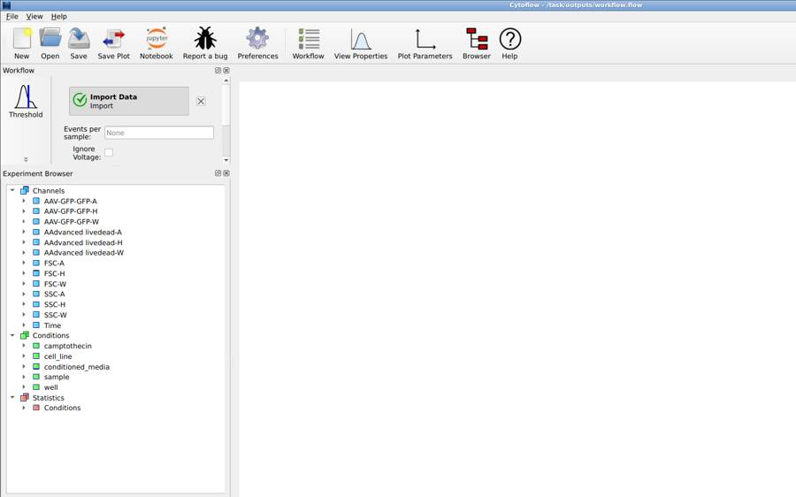
cu click 43 477; sleep 0.5; cu click 43 421; sleep 0.5; cu click 43 364; sleep 1; cu screenshot /tmp/screen.png
{
"file_path": "/tmp/screen.png"
}/tmp/screen.png
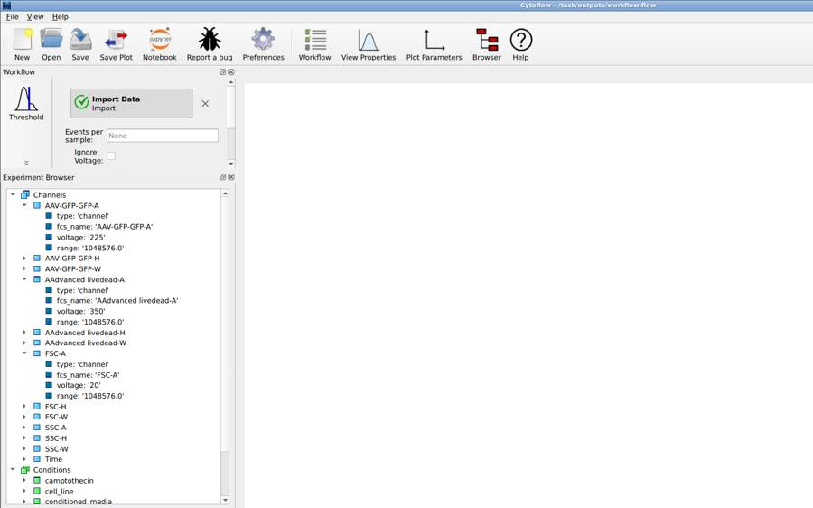
cu drag 210 300 210 700; sleep 1; cu screenshot /tmp/screen.png
{
"file_path": "/tmp/screen.png"
}/tmp/screen.png
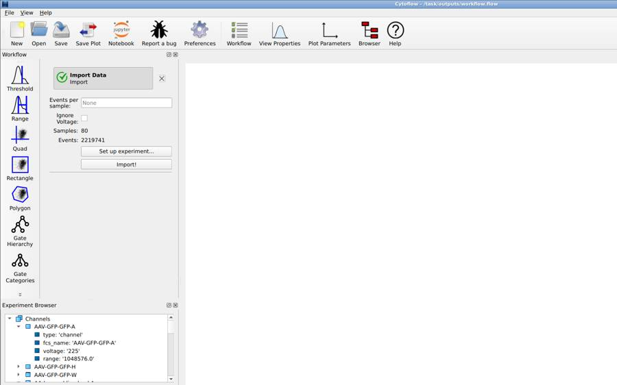
cu click 652 75; sleep 2; cu screenshot /tmp/screen.png
{
"file_path": "/tmp/screen.png"
}/tmp/screen.png
which xdotool wmctrl xwininfo xrandr 2>&1; echo $DISPLAY; cu 2>&1 | head -20
/usr/bin/xdotool
/usr/bin/xwininfo
:1
# Computer-use helper: the agent's only way to act on the screen.
# cu screenshot [path] -> PNG of the screen (default /tmp/screen.png); prints path
# cu click X Y [left|right|double]
# cu move X Y | cu drag X1 Y1 X2 Y2 | cu scroll X Y up|down [N]
# cu type "text" (keystrokes) | cu paste "text" (clipboard) | cu key KEYS (e.g. ctrl+s, Return)
# cu cursor -> current mouse position
export DISPLAY=${DISPLAY:-:1}
cmd=$1; shiftxwininfo -root -tree | grep -i -v "has no name" | head -30
Parent window id: 0x0 (none)
16 children:
0xe00025 "cytoflow": ("cytoflow" "cytoflow") 304x168+7+41 +7+41
0xe00019 "Qt Clipboard Requestor Window": () 3x3+0+0 +0+0
0xe00008 "cytoflow": () 1x1+0+0 +0+0
0xe00004 "Qt Selection Owner for cytoflow": () 3x3+0+0 +0+0
0xc0000e "Openbox": ("" (none)) 1x1+-100+-100 +-100+-100
1 child:
1 child:
1 child:
3 children:
2 children:
56 children:
0xe00006 "Cytoflow - /task/outputs/workflow.flow": ("cytoflow" "cytoflow") 2082x1171+1+20 +1+20
4 children:
12 children:
2 children:
1 child:
1 child:
1 child:cu click 600 9 double; sleep 2; xwininfo -root -tree | grep "Cytoflow -"; cu screenshot /tmp/screen.png
{
"file_path": "/tmp/screen.png"
} 0xe00006 "Cytoflow - /task/outputs/workflow.flow": ("cytoflow" "cytoflow") 1440x881+0+19 +0+19
/tmp/screen.png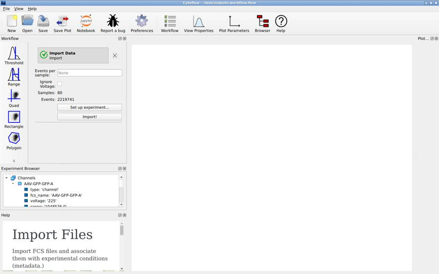
cu click 408 706; sleep 0.5; cu click 408 553; sleep 0.5; cu drag 1364 510 1080 510; sleep 1.5; cu screenshot /tmp/screen.png
{
"file_path": "/tmp/screen.png"
}/tmp/screen.png
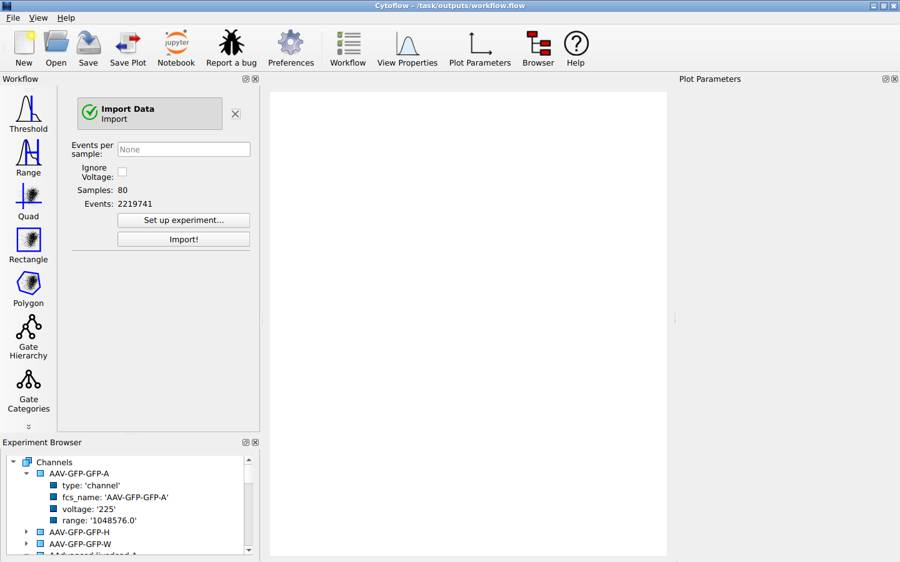
cu click 408 708; sleep 0.5; cu click 651 75; sleep 1.5; cu screenshot /tmp/screen.png
{
"file_path": "/tmp/screen.png"
}/tmp/screen.png
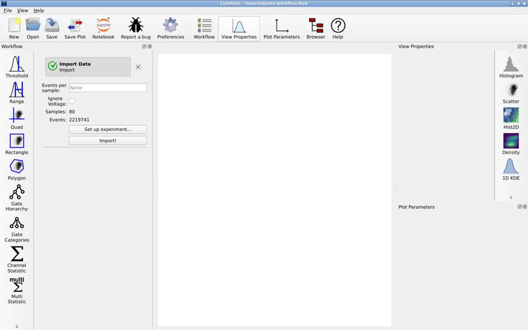
cu click 1393 390; sleep 2; cu screenshot /tmp/screen.png
{
"file_path": "/tmp/screen.png"
}/tmp/screen.png
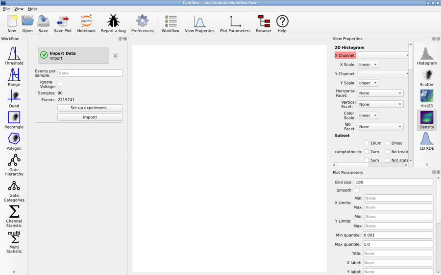
cu click 1250 181; sleep 1; cu screenshot /tmp/screen.png
{
"file_path": "/tmp/screen.png"
}/tmp/screen.png
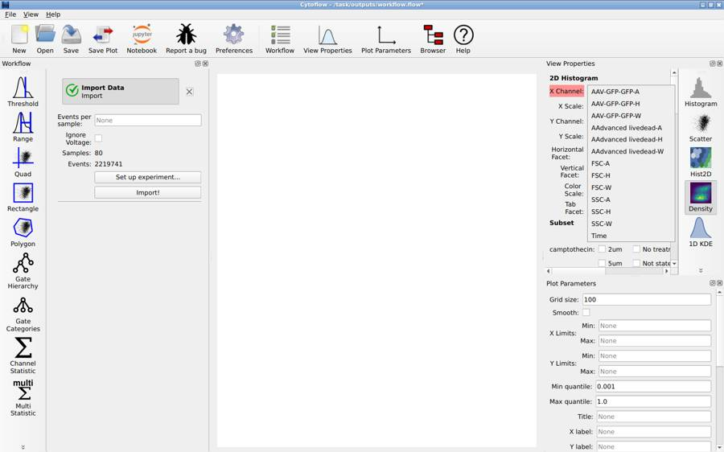
cu click 1195 325; sleep 1; cu click 1250 241; sleep 1; cu screenshot /tmp/screen.png
{
"file_path": "/tmp/screen.png"
}/tmp/screen.png
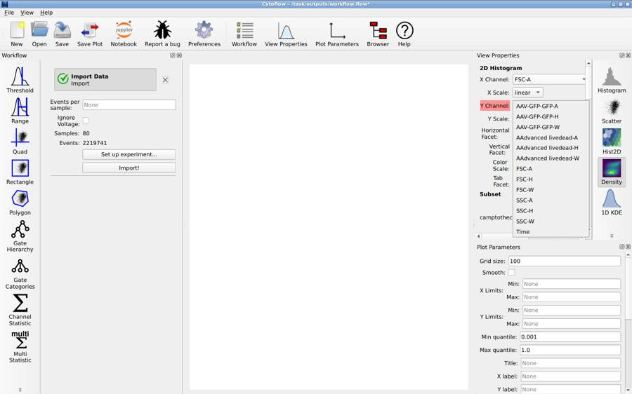
cu click 1195 457; sleep 8; cu screenshot /tmp/screen.png
{
"file_path": "/tmp/screen.png"
}/tmp/screen.png
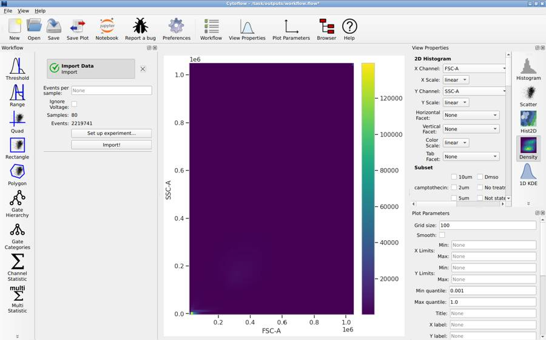
cu click 1203 378; sleep 1; cu screenshot /tmp/screen.png
{
"file_path": "/tmp/screen.png"
}/tmp/screen.png
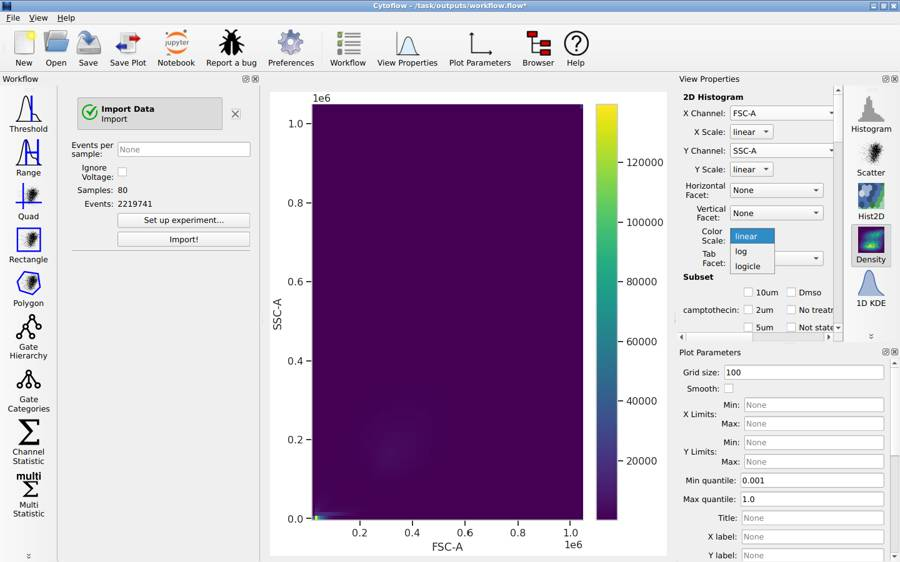
cu click 1186 402; sleep 8; cu screenshot /tmp/screen.png
{
"file_path": "/tmp/screen.png"
}/tmp/screen.png
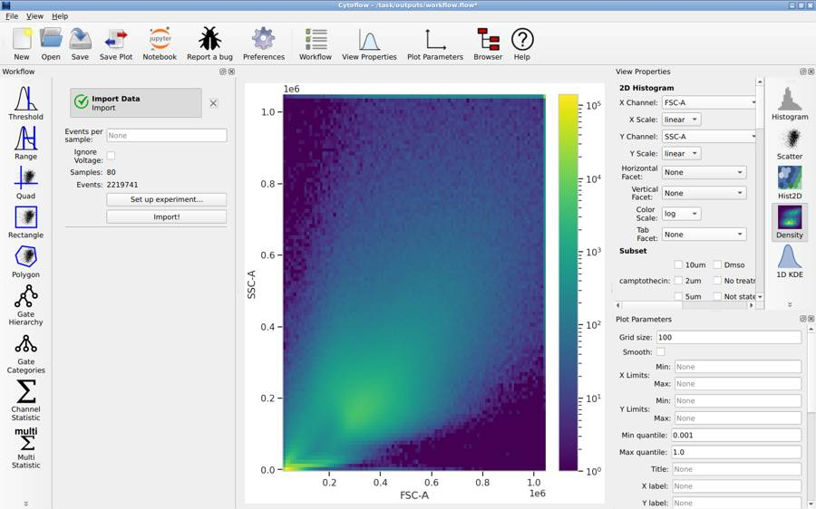
cu click 45 460; sleep 2; cu screenshot /tmp/screen.png
{
"file_path": "/tmp/screen.png"
}/tmp/screen.png
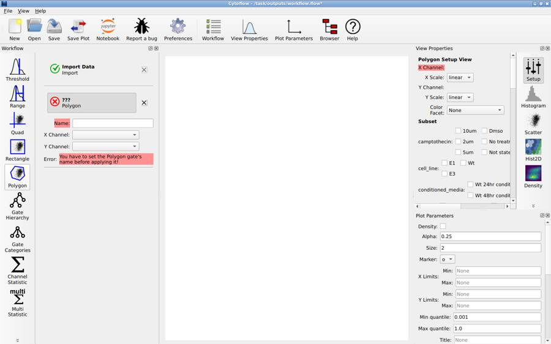
cu click 295 322; cu type "Cells"; cu key Return; sleep 1; cu click 275 353; sleep 1; cu screenshot /tmp/screen.png
{
"file_path": "/tmp/screen.png"
}/tmp/screen.png
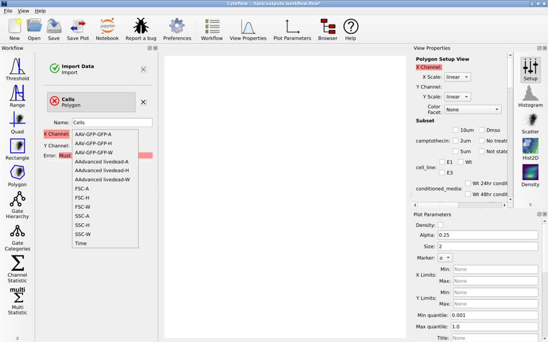
cu click 215 496; sleep 1; cu click 275 383; sleep 1; cu click 215 599; sleep 1; cu click 1157 592; sleep 10; cu screenshot /tmp/screen.png
{
"file_path": "/tmp/screen.png"
}/tmp/screen.png
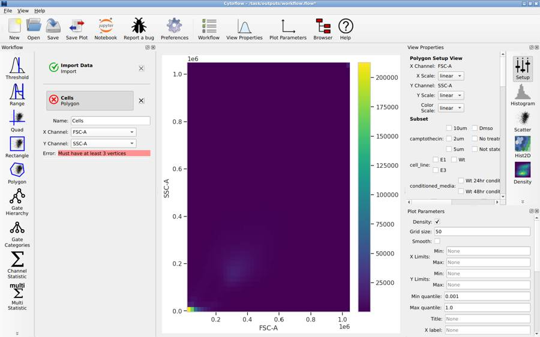
cu click 1203 288; sleep 1; cu click 1186 312; sleep 10; cu screenshot /tmp/screen.png
{
"file_path": "/tmp/screen.png"
}/tmp/screen.png
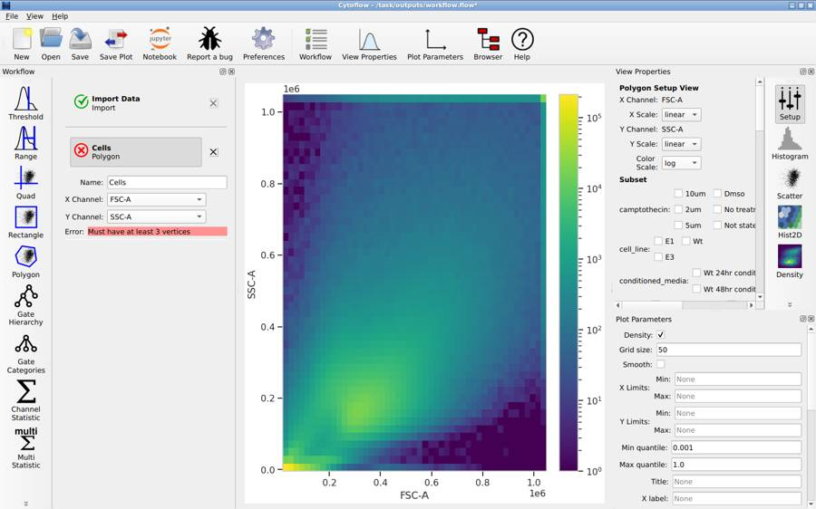
for p in "545 806" "545 641" "626 325" "761 198" "941 198" "941 641" "784 793"; do cu click $p; sleep 0.7; done; cu click 626 806 double; sleep 10; cu screenshot /tmp/screen.png
{
"file_path": "/tmp/screen.png"
}/tmp/screen.png
cu click 545 806; sleep 10; cu screenshot /tmp/screen.png
{
"file_path": "/tmp/screen.png"
}/tmp/screen.png
cu click 45 460; sleep 2; cu click 295 408; cu type "Singlets"; cu key Return; sleep 1; cu screenshot /tmp/screen.png
{
"file_path": "/tmp/screen.png"
}/tmp/screen.png
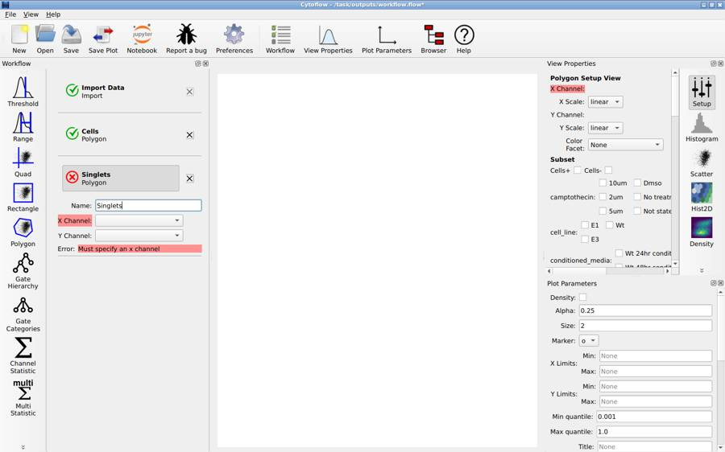
cu click 275 439; sleep 1; cu click 215 583; sleep 1; cu click 275 469; sleep 1; cu click 215 637; sleep 1; cu click 1147 339; sleep 1; cu click 1157 592; sleep 6; cu click 1203 288; sleep 1; cu click 1186 312; sleep 10; cu screenshot /tmp/screen.png
{
"file_path": "/tmp/screen.png"
}/tmp/screen.png
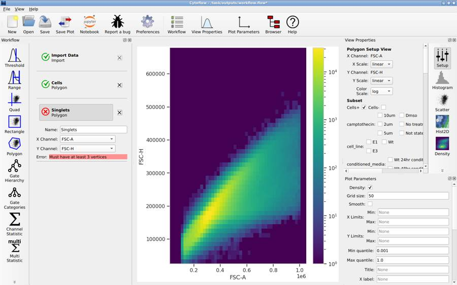
for p in "568 820" "568 745" "828 191" "961 191" "961 404" "568 820"; do cu click $p; sleep 0.8; done; sleep 10; cu screenshot /tmp/screen.png
{
"file_path": "/tmp/screen.png"
}/tmp/screen.png
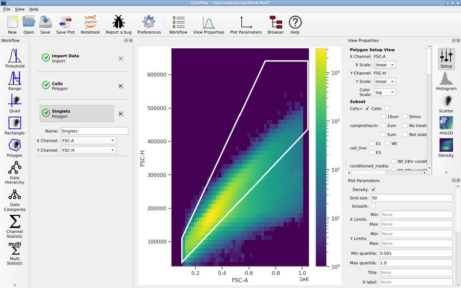
cu click 1393 460; sleep 2; cu screenshot /tmp/screen.png
{
"file_path": "/tmp/screen.png"
}/tmp/screen.png
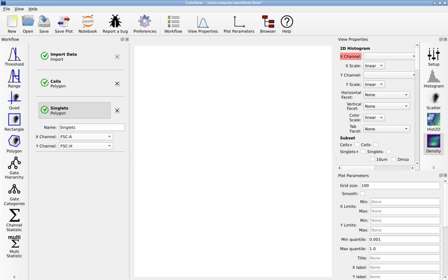
cu drag 1262 550 1262 790; sleep 1; cu click 1250 181; sleep 1; cu click 1225 182; sleep 1; cu click 1203 211; sleep 1; cu screenshot /tmp/screen.png
{
"file_path": "/tmp/screen.png"
}/tmp/screen.png
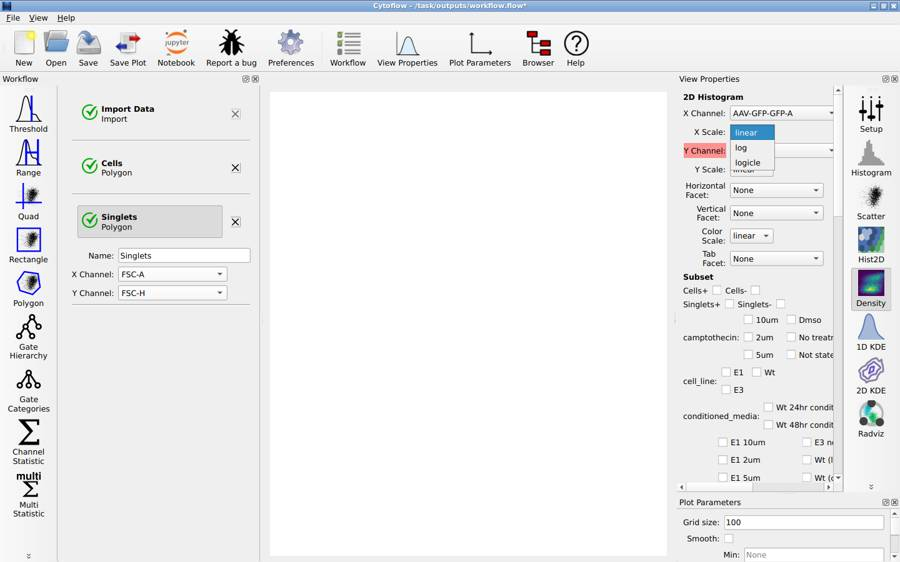
cu click 1196 260; sleep 1; cu click 1147 465; sleep 0.5; cu click 1167 487; sleep 0.5; cu click 1266 540; sleep 0.5; cu click 1266 568; sleep 0.5; cu click 1250 241; sleep 1; cu click 1245 313; sleep 3; cu click 1203 271; sleep 1; cu click 1196 319; sleep 3; cu click 1203 378; sleep 1; cu click 1186 402; sleep 3; cu click 1243 305; sleep 1; cu screenshot /tmp/screen.png
{
"file_path": "/tmp/screen.png"
}/tmp/screen.png
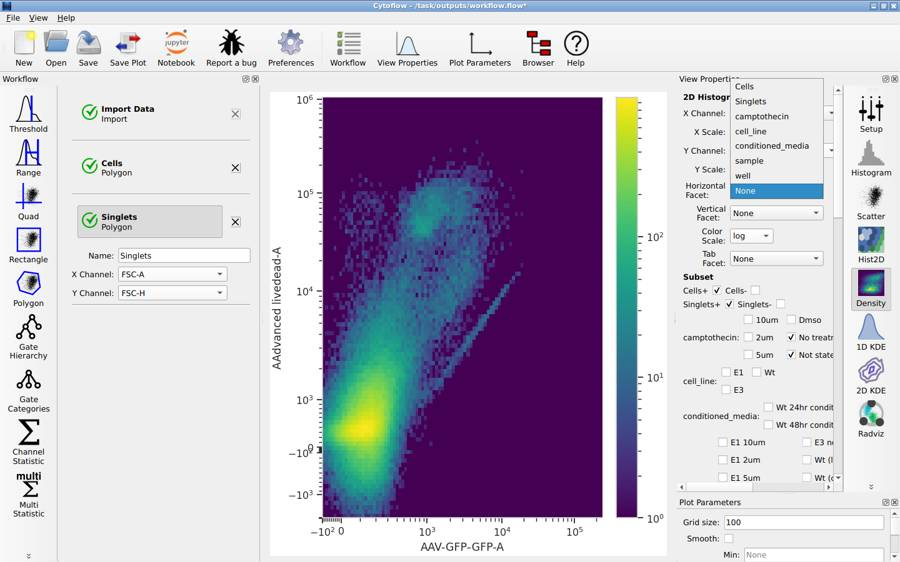
cu click 1199 257; sleep 12; cu screenshot /tmp/screen.png
{
"file_path": "/tmp/screen.png"
}/tmp/screen.png
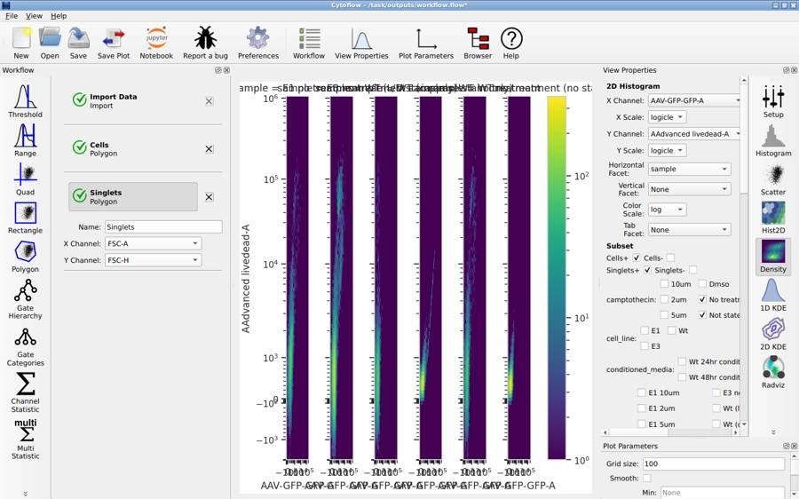
cu click 1393 250; sleep 2; cu screenshot /tmp/screen.png
{
"file_path": "/tmp/screen.png"
}/tmp/screen.png
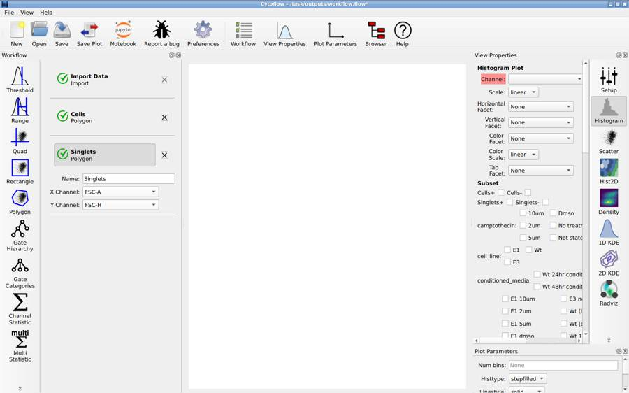
cu click 1147 441; sleep 0.5; cu click 1167 463; sleep 0.5; cu click 1266 516; sleep 0.5; cu click 1266 544; sleep 0.5; cu click 1245 181; sleep 1; cu click 1225 182; sleep 3; cu click 1199 211; sleep 1; cu click 1192 259; sleep 3; cu click 1238 281; sleep 1; cu screenshot /tmp/screen.png
{
"file_path": "/tmp/screen.png"
}/tmp/screen.png
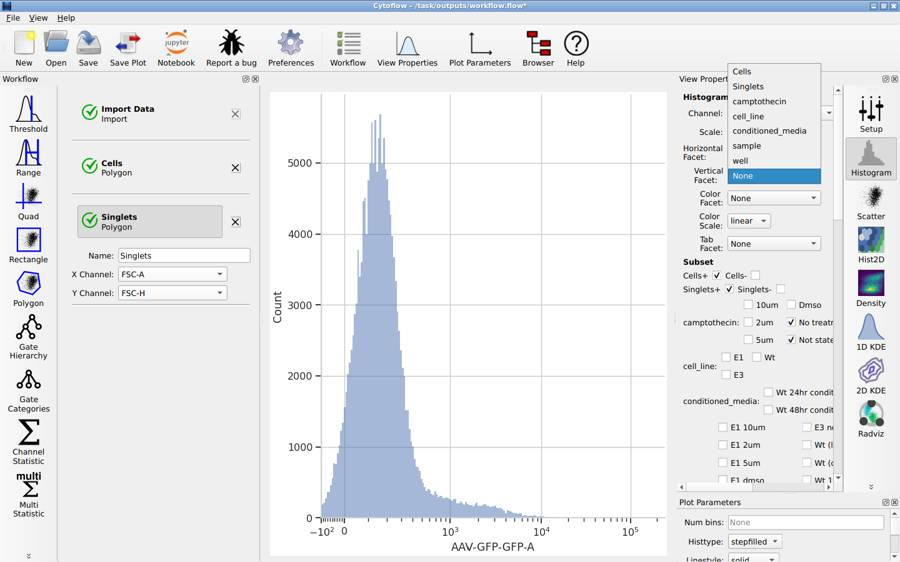
cu click 1195 233; sleep 12; cu screenshot /tmp/screen.png
{
"file_path": "/tmp/screen.png"
}/tmp/screen.png
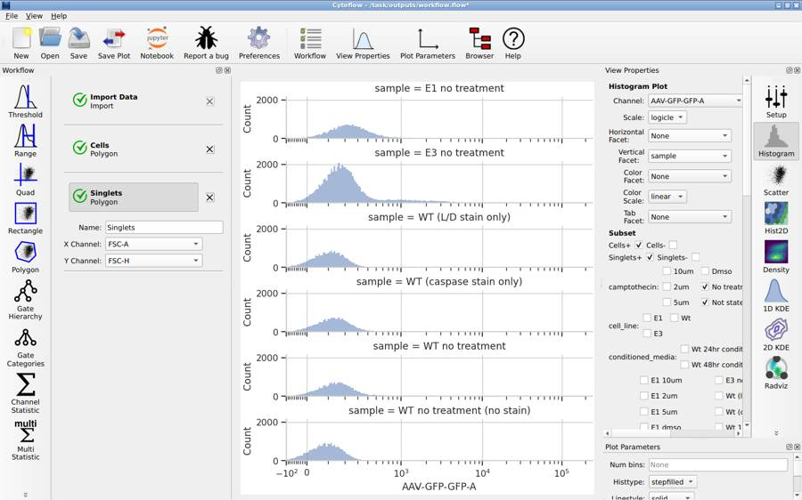
cu click 1238 281; sleep 1; cu screenshot /tmp/screen.png
{
"file_path": "/tmp/screen.png"
}/tmp/screen.png
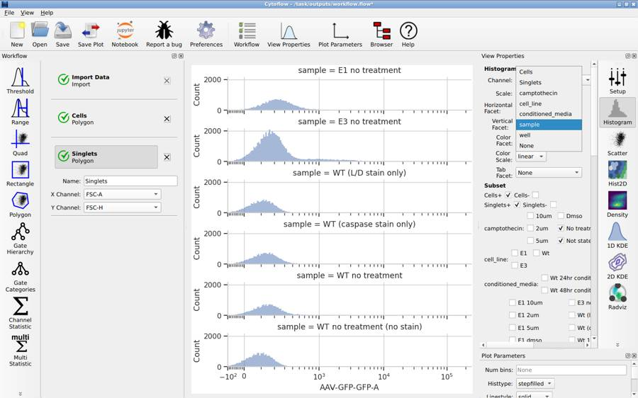
cu click 1185 305; sleep 14; cu screenshot /tmp/screen.png
{
"file_path": "/tmp/screen.png"
}/tmp/screen.png
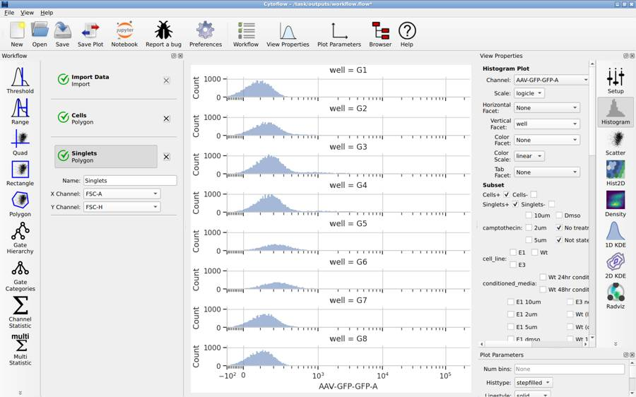
cu click 1266 516; sleep 0.5; cu click 1266 544; sleep 0.5; cu click 1197 488; sleep 0.5; cu click 1266 488; sleep 0.5; cu click 1238 281; sleep 1; cu click 1195 281; sleep 14; cu screenshot /tmp/screen.png
{
"file_path": "/tmp/screen.png"
}/tmp/screen.png
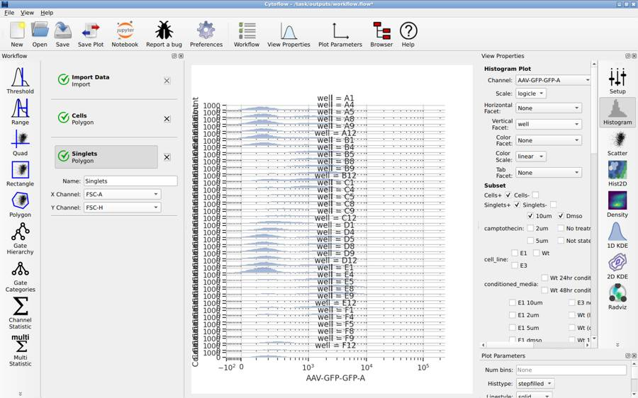
cu click 1238 281; sleep 1; cu click 1195 257; sleep 14; cu screenshot /tmp/screen.png
{
"file_path": "/tmp/screen.png"
}/tmp/screen.png
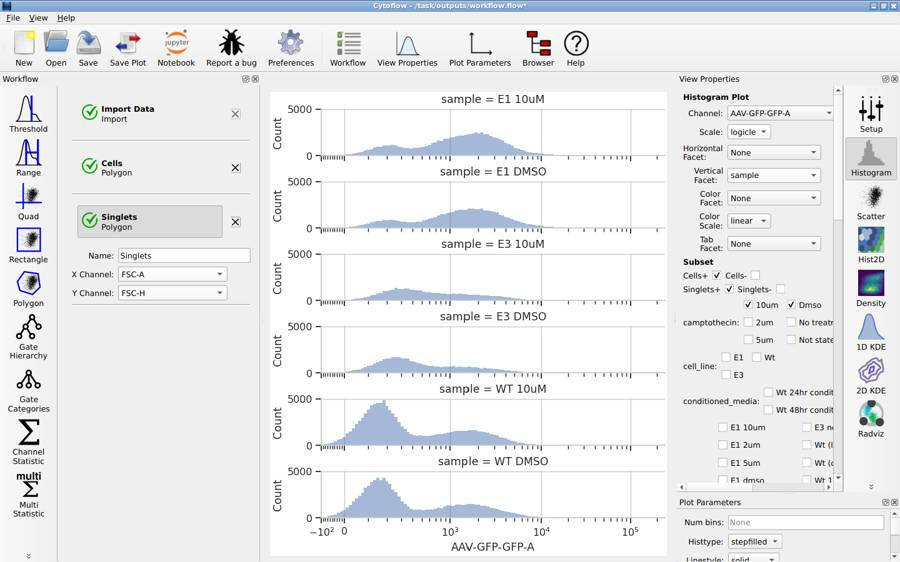
cu click 1245 181; sleep 1; cu click 1245 253; sleep 14; cu screenshot /tmp/screen.png
{
"file_path": "/tmp/screen.png"
}/tmp/screen.png
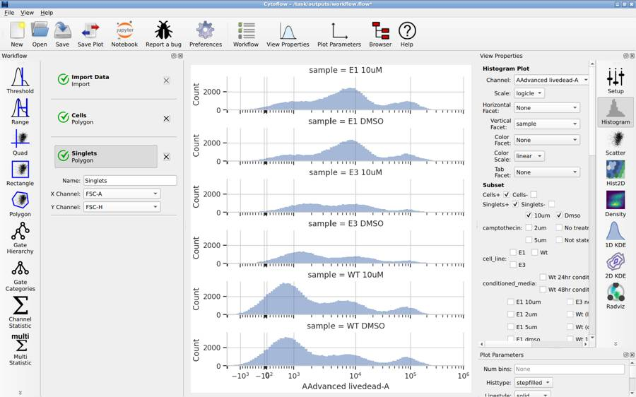
cu click 1393 460; sleep 3; cu click 1243 305; sleep 1; cu screenshot /tmp/screen.png
{
"file_path": "/tmp/screen.png"
}/tmp/screen.png
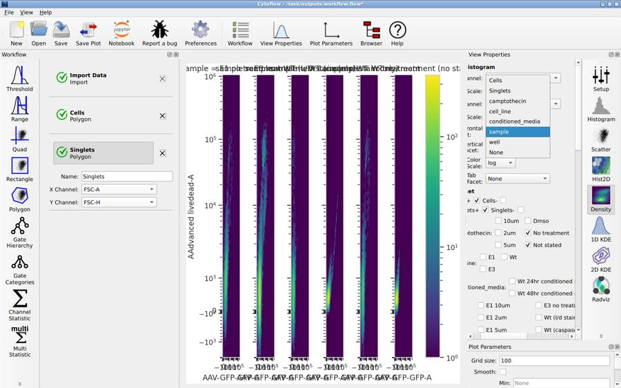
cu click 1150 353; sleep 2; cu click 1155 512; sleep 0.5; cu click 1224 512; sleep 0.5; cu click 1224 540; sleep 0.5; cu click 1224 568; sleep 14; cu screenshot /tmp/screen.png
{
"file_path": "/tmp/screen.png"
}/tmp/screen.png
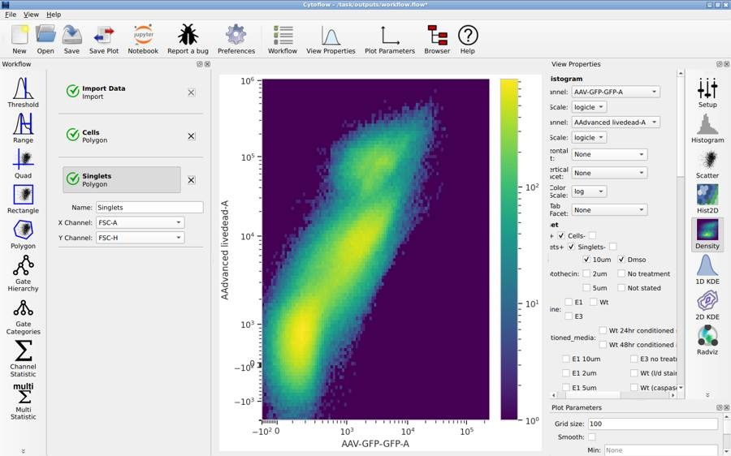
thinking
Three clusters showed up in the caspase versus SYTOX plot, and I'm checking the single-stain controls to see whether the intermediate BL2 signal is just caspase-dye spillover.
cu click 1155 512; sleep 0.5; cu click 1224 512; sleep 0.5; cu click 1224 568; sleep 0.5; cu click 1200 305; sleep 1; cu screenshot /tmp/screen.png
{
"file_path": "/tmp/screen.png"
}/tmp/screen.png
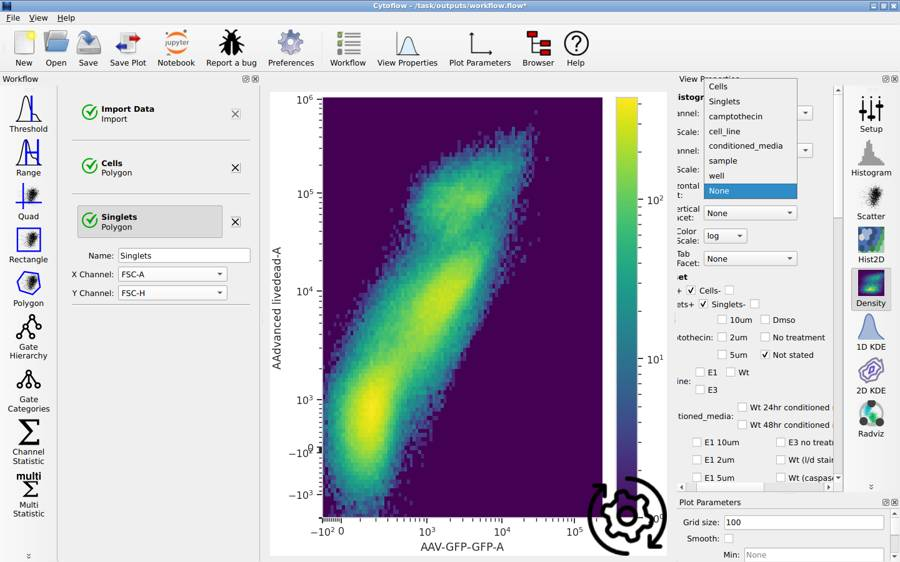
cu click 1157 257; sleep 14; cu screenshot /tmp/screen.png
{
"file_path": "/tmp/screen.png"
}/tmp/screen.png
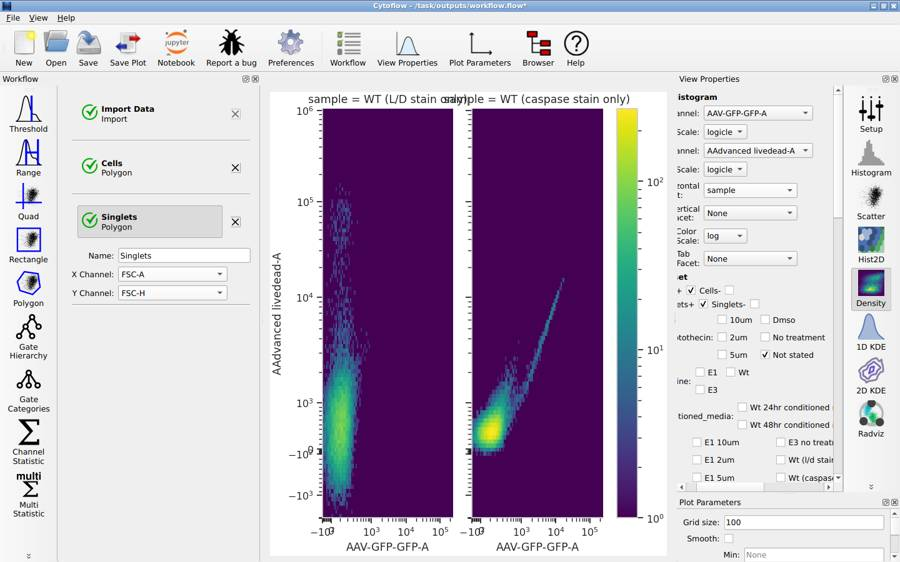
cu click 45 250; sleep 2; cu screenshot /tmp/screen.png
{
"file_path": "/tmp/screen.png"
}/tmp/screen.png
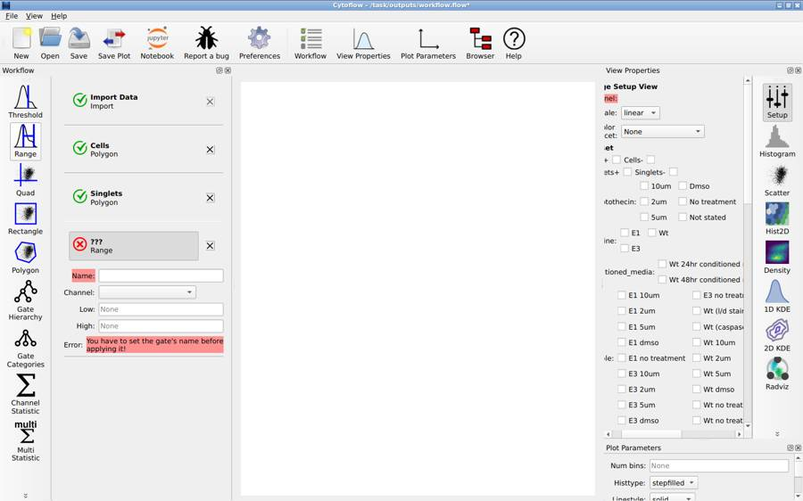
cu click 288 495; cu type "Live"; cu key Return; sleep 1; cu click 263 525; sleep 1; cu click 250 597; sleep 2; cu click 1105 287; sleep 0.5; cu click 1125 309; sleep 0.5; cu click 1147 202; sleep 1; cu click 1140 250; sleep 12; cu screenshot /tmp/screen.png
{
"file_path": "/tmp/screen.png"
}/tmp/screen.png
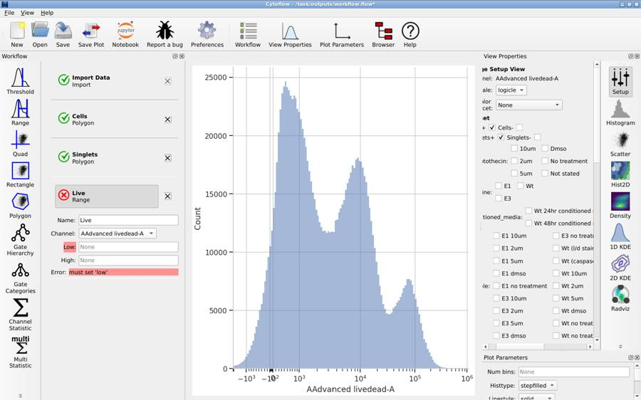
cu click 288 555 ; cu type "-1000000"; cu key Return; sleep 1; cu click 288 585; cu type "30000"; cu key Return; sleep 12; cu screenshot /tmp/screen.png
{
"file_path": "/tmp/screen.png"
}/tmp/screen.png
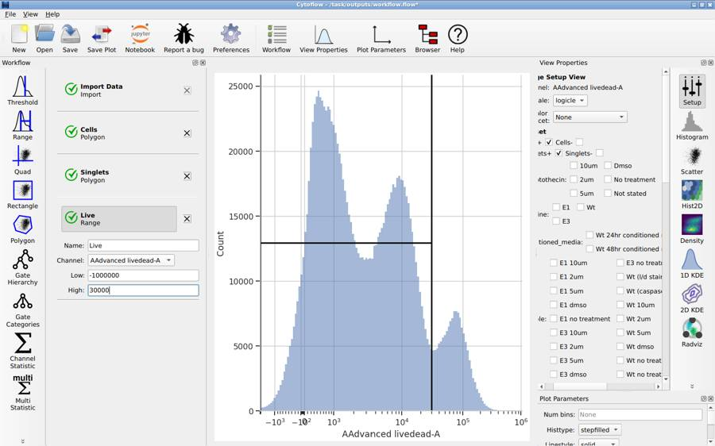
cu click 45 180; sleep 2; cu screenshot /tmp/screen.png
{
"file_path": "/tmp/screen.png"
}/tmp/screen.png
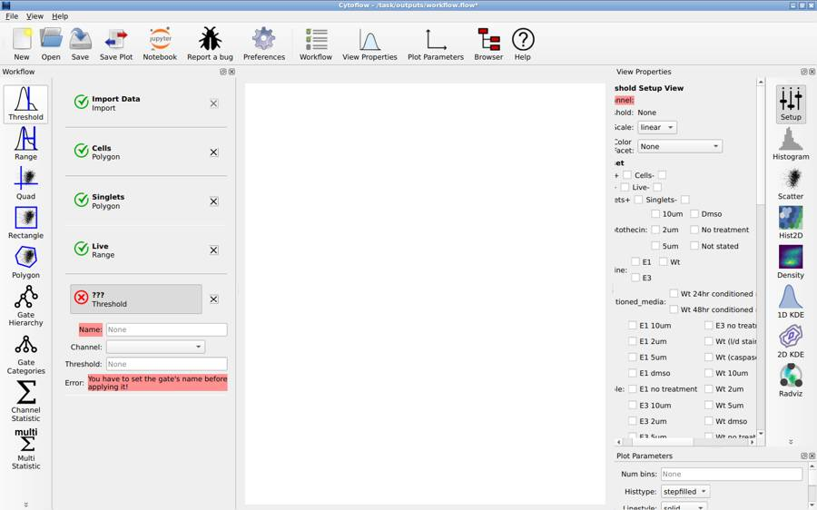
cu click 293 581; cu type "Casp37_pos"; cu key Return; sleep 1; cu click 273 612; sleep 1; cu click 250 612; sleep 2; cu click 1105 309; sleep 0.5; cu click 1101 331; sleep 0.5; cu click 1125 352; sleep 0.5; cu click 1157 225; sleep 1; cu click 1150 273; sleep 12; cu screenshot /tmp/screen.png
{
"file_path": "/tmp/screen.png"
}/tmp/screen.png
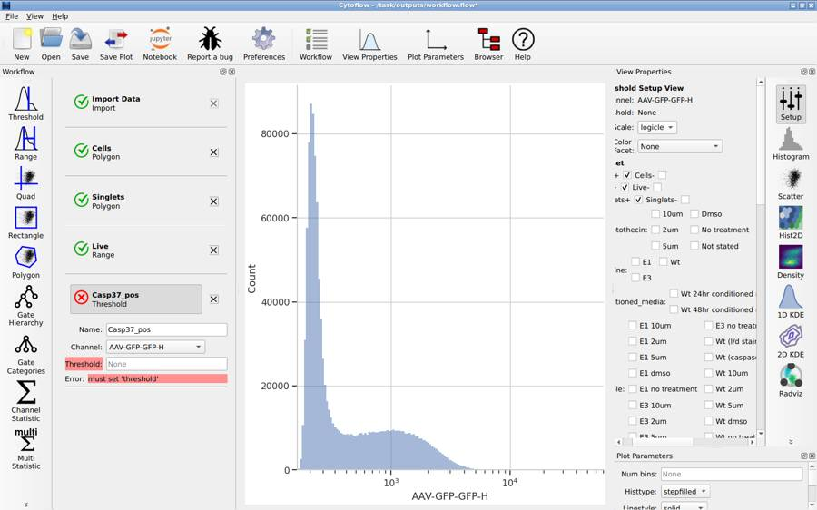
cu click 273 612; sleep 1; cu screenshot /tmp/screen.png
{
"file_path": "/tmp/screen.png"
}/tmp/screen.png
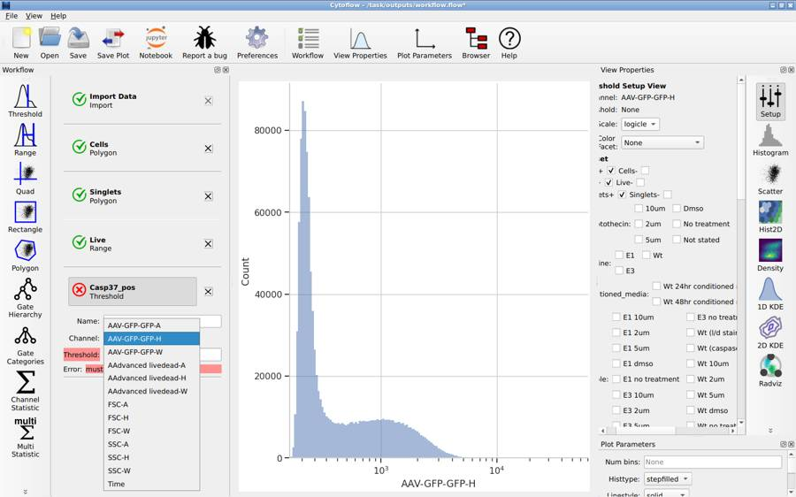
cu click 243 589; sleep 14; cu screenshot /tmp/screen.png
{
"file_path": "/tmp/screen.png"
}/tmp/screen.png
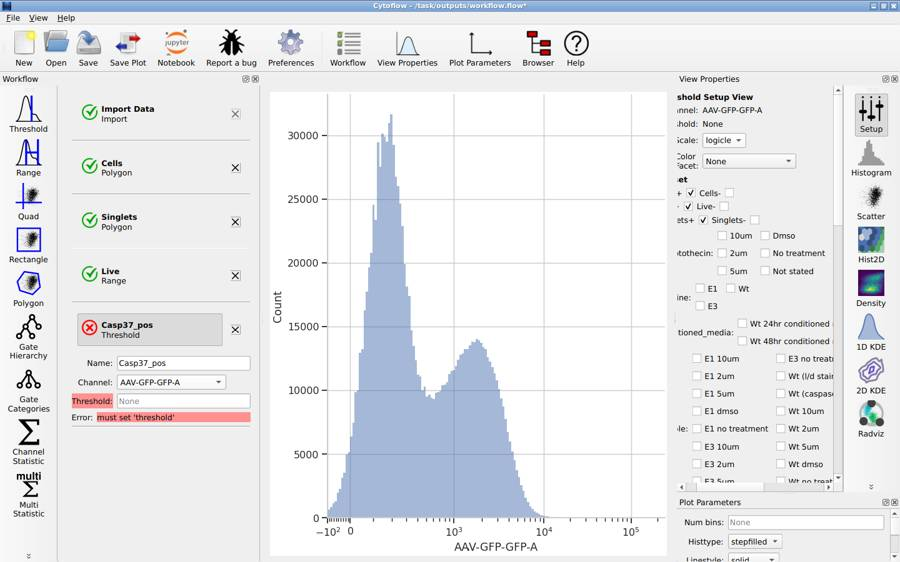
cu click 690 500; sleep 12; cu screenshot /tmp/screen.png
{
"file_path": "/tmp/screen.png"
}/tmp/screen.png
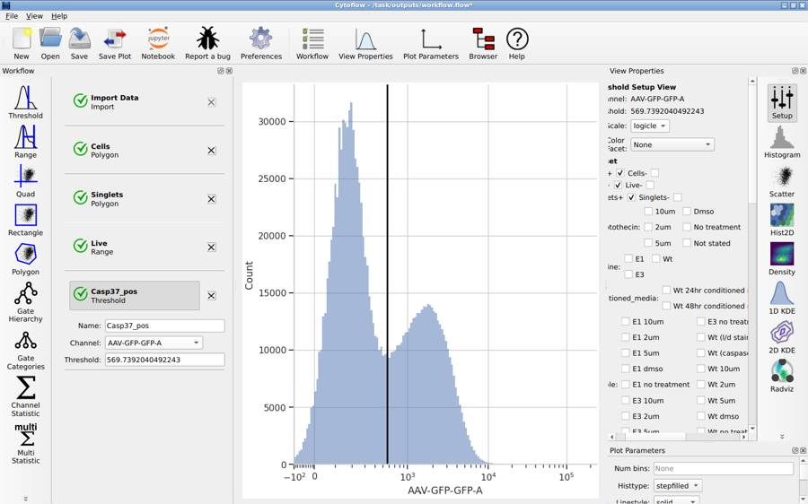
cu click 1198 258; sleep 1; cu screenshot /tmp/screen.png
{
"file_path": "/tmp/screen.png"
}/tmp/screen.png
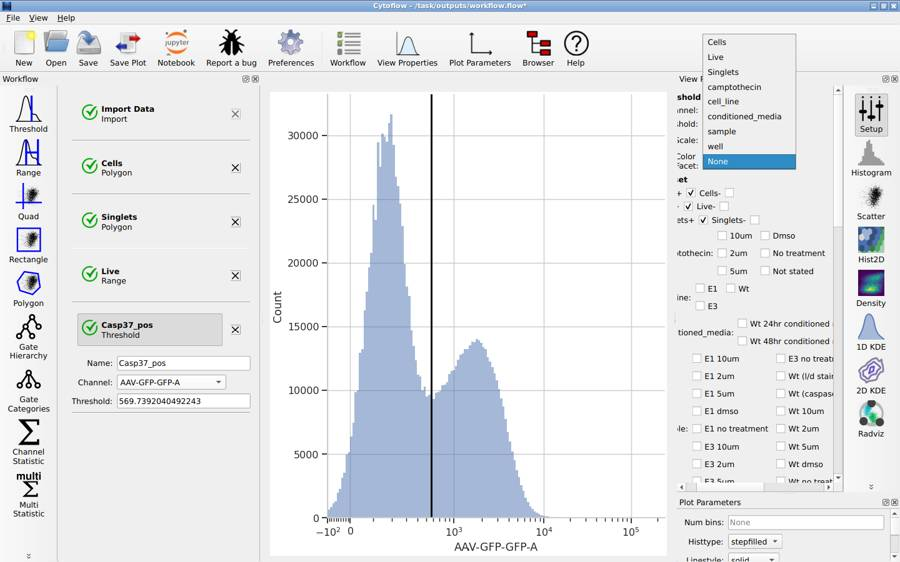
cu click 1157 163; sleep 14; cu screenshot /tmp/screen.png
{
"file_path": "/tmp/screen.png"
}/tmp/screen.png
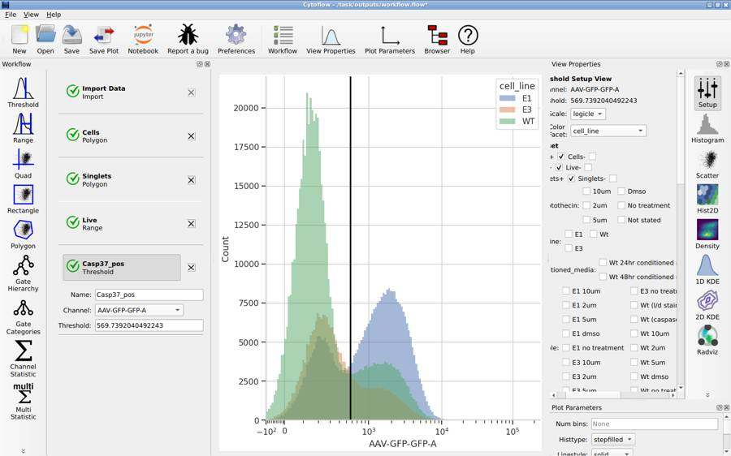
cu click 293 642 ; cu key ctrl+a; cu type "700"; cu key Return; sleep 12; cu screenshot /tmp/screen.png
{
"file_path": "/tmp/screen.png"
}/tmp/screen.png
cu key ctrl+s; sleep 2; cu click 1393 250; sleep 2; cu screenshot /tmp/screen.png
{
"file_path": "/tmp/screen.png"
}/tmp/screen.png
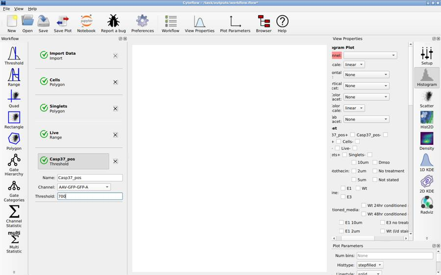
cu click 1169 616; sleep 0.5; cu click 1188 672; sleep 0.5; cu click 1205 181; sleep 1; cu click 1160 469; sleep 3; cu click 1196 281; sleep 1; cu click 1150 257; sleep 14; cu screenshot /tmp/screen.png
{
"file_path": "/tmp/screen.png"
}/tmp/screen.png
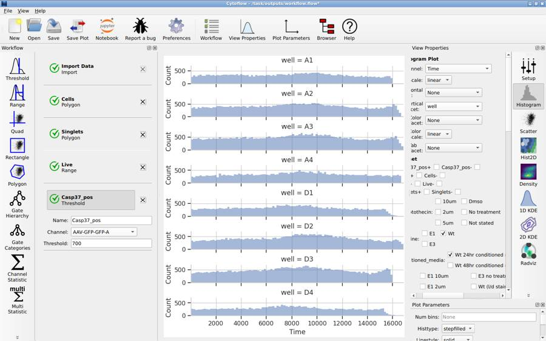
cu drag 1080 510 940 510; sleep 3; cu screenshot /tmp/screen.png
{
"file_path": "/tmp/screen.png"
}/tmp/screen.png
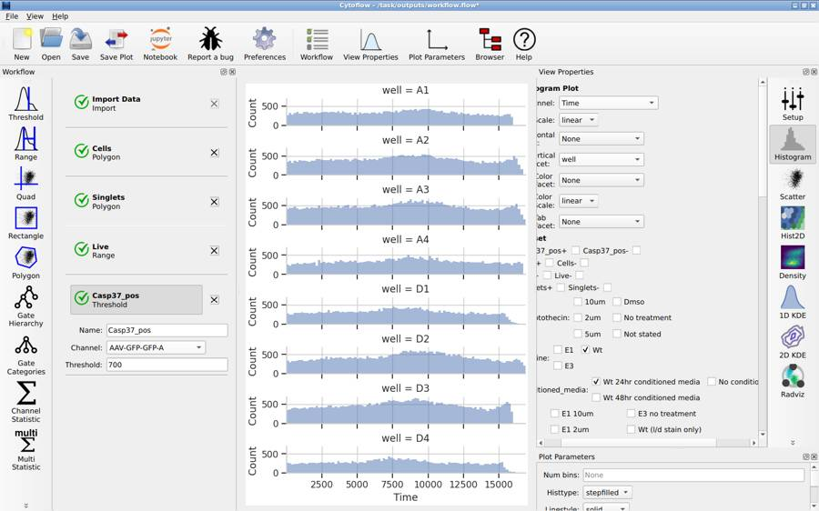
cu click 1048 672; sleep 0.5; cu click 1048 700; sleep 14; cu screenshot /tmp/t_wt48.png; cu click 1048 700; sleep 0.5; cu click 1251 672; sleep 0.5; cu click 1016 531; cu click 1016 559; cu click 1016 588; cu click 1085 531; sleep 16; cu screenshot /tmp/t_wtnone.png
{
"file_path": "/tmp/t_wt48.png"
}{
"file_path": "/tmp/t_wtnone.png"
}/tmp/t_wt48.png /tmp/t_wtnone.png
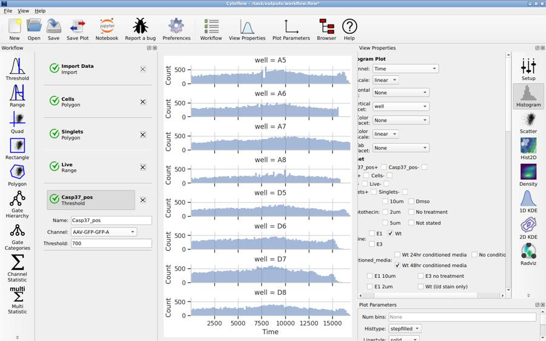
cu click 1030 616; sleep 0.5; cu click 981 616; sleep 16; cu screenshot /tmp/t_e1none.png; cu click 1251 672; sleep 0.5; cu click 1048 672; sleep 16; cu screenshot /tmp/t_e124.png; cu click 1048 672; sleep 0.5; cu click 1048 700; sleep 16; cu screenshot /tmp/t_e148.png
{
"file_path": "/tmp/t_e1none.png"
}{
"file_path": "/tmp/t_e124.png"
}{
"file_path": "/tmp/t_e148.png"
}/tmp/t_e1none.png /tmp/t_e124.png /tmp/t_e148.png
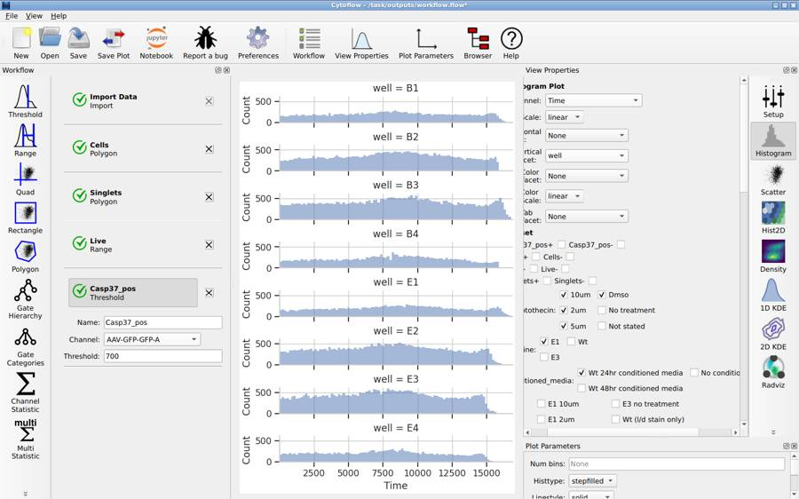
cu click 981 616; sleep 0.5; cu click 981 644; sleep 16; cu screenshot /tmp/t_e348.png; cu click 1048 700; sleep 0.5; cu click 1048 672; sleep 16; cu screenshot /tmp/t_e324.png; cu click 1048 672; sleep 0.5; cu click 1251 672; sleep 16; cu screenshot /tmp/t_e3none.png; cu click 981 644; cu click 1016 531; cu click 1016 559; cu click 1016 588; cu click 1085 531; cu click 1085 559; cu click 1085 588; sleep 16; cu screenshot /tmp/t_g.png
{
"file_path": "/tmp/t_e348.png"
}{
"file_path": "/tmp/t_e324.png"
}{
"file_path": "/tmp/t_e3none.png"
}{
"file_path": "/tmp/t_g.png"
}/tmp/t_e348.png /tmp/t_e324.png /tmp/t_e3none.png /tmp/t_g.png
cu click 45 700; sleep 3; cu screenshot /tmp/screen.png
{
"file_path": "/tmp/screen.png"
}/tmp/screen.png
cu drag 421 510 600 510; sleep 2; cu click 300 668; cu type "n_scatter"; cu key Return; sleep 1; cu click 265 698; sleep 1; cu screenshot /tmp/screen.png
{
"file_path": "/tmp/screen.png"
}/tmp/screen.png
cu click 205 743; sleep 1; cu click 255 728; sleep 1; cu screenshot /tmp/screen.png
{
"file_path": "/tmp/screen.png"
}/tmp/screen.png
cu click 205 576; sleep 1; cu scroll 250 700 down 10; sleep 1; cu screenshot /tmp/screen.png
{
"file_path": "/tmp/screen.png"
}/tmp/screen.png
cu drag 408 250 408 860; sleep 1; cu screenshot /tmp/screen.png
{
"file_path": "/tmp/screen.png"
}/tmp/screen.png
cu drag 408 800 408 640; sleep 1; cu screenshot /tmp/screen.png
{
"file_path": "/tmp/screen.png"
}/tmp/screen.png
cu drag 408 600 408 510; sleep 1; cu screenshot /tmp/screen.png
{
"file_path": "/tmp/screen.png"
}/tmp/screen.png
cu drag 408 500 408 355; sleep 1; cu screenshot /tmp/screen.png
{
"file_path": "/tmp/screen.png"
}/tmp/screen.png
cu drag 419 511 640 511; sleep 2; cu screenshot /tmp/screen.png
{
"file_path": "/tmp/screen.png"
}/tmp/screen.png
cu click 185 417; sleep 0.5; cu click 185 473; sleep 0.5; cu click 405 473; sleep 8; cu screenshot /tmp/screen.png
{
"file_path": "/tmp/screen.png"
}/tmp/screen.png
cu click 45 700; sleep 3; cu screenshot /tmp/screen.png
{
"file_path": "/tmp/screen.png"
}/tmp/screen.png
cu click 390 386; cu type "n_fluor"; cu key Return; sleep 1; cu click 265 416; sleep 1; cu click 240 418; sleep 1; cu click 255 446; sleep 1; cu click 210 448; sleep 1; cu click 185 475; sleep 0.5; cu click 185 531; sleep 0.5; cu click 405 559; sleep 6; cu drag 628 250 628 870; sleep 1; cu screenshot /tmp/screen.png
{
"file_path": "/tmp/screen.png"
}/tmp/screen.png
cu drag 628 250 628 885; sleep 1; cu screenshot /tmp/screen.png
{
"file_path": "/tmp/screen.png"
}/tmp/screen.png
cu click 188 813; sleep 0.5; cu click 168 857; sleep 6; cu screenshot /tmp/screen.png
{
"file_path": "/tmp/screen.png"
}/tmp/screen.png
cu click 1393 779; sleep 1; cu screenshot /tmp/screen.png
{
"file_path": "/tmp/screen.png"
}/tmp/screen.png
cu click 1340 675; sleep 3; cu screenshot /tmp/screen.png
{
"file_path": "/tmp/screen.png"
}/tmp/screen.png
cu click 1062 181; sleep 1; cu screenshot /tmp/screen.png
{
"file_path": "/tmp/screen.png"
}/tmp/screen.png
cu click 1045 207; sleep 4; cu screenshot /tmp/screen.png
{
"file_path": "/tmp/screen.png"
}/tmp/screen.png
mkdir -p /task/outputs/cytoflow_exports && chmod 777 /task/outputs/cytoflow_exports; cu click 1062 211; sleep 2; cu screenshot /tmp/screen.png
{
"file_path": "/tmp/screen.png"
}/tmp/screen.png
cu click 706 567; cu paste "/task/outputs/cytoflow_exports/n_fluor.csv"; sleep 0.5; cu key Return; sleep 3; cu screenshot /tmp/screen.png; ls -la /task/outputs/cytoflow_exports; head -20 /task/outputs/cytoflow_exports/n_fluor.csv; wc -l /task/outputs/cytoflow_exports/n_fluor.csv
/tmp/screen.png total 16 drwxrwsrwx 2 root task 4096 Nov 10 20:27 . drwxrwsrwx 3 agent task 4096 Nov 10 20:27 .. -rw-rw-r-- 1 cfapp task 4241 Nov 10 20:27 n_fluor.csv Casp37_pos,Live,well,AAV-GFP-GFP-A 0,0,A1,132.0 0,0,A10,117.0 0,0,A11,115.0 0,0,A12,24.0 0,0,A2,160.0 0,0,A3,289.0 0,0,A4,64.0 0,0,A5,90.0 0,0,A6,113.0 0,0,A7,114.0 0,0,A8,55.0 0,0,A9,49.0 0,0,B1,8.0 0,0,B10,1.0 0,0,B12,2.0 0,0,B2,12.0 0,0,B3,12.0 0,0,B4,3.0 0,0,B5,2.0 307 /task/outputs/cytoflow_exports/n_fluor.csv
cu click 1062 181; sleep 1; cu click 1050 205; sleep 4; cu click 1062 211; sleep 2; cu click 706 567; cu paste "/task/outputs/cytoflow_exports/n_scatter.csv"; sleep 0.5; cu key Return; sleep 3; cu screenshot /tmp/screen.png; ls -la /task/outputs/cytoflow_exports; head -5 /task/outputs/cytoflow_exports/n_scatter.csv; wc -l /task/outputs/cytoflow_exports/n_scatter.csv; cu key ctrl+s; sleep 2
{
"file_path": "/tmp/screen.png"
}/tmp/screen.png total 24 drwxrwsrwx 2 root task 4096 Nov 10 20:28 . drwxrwsrwx 3 agent task 4096 Nov 10 20:27 .. -rw-rw-r-- 1 cfapp task 4241 Nov 10 20:27 n_fluor.csv -rw-rw-r-- 1 cfapp task 4636 Nov 10 20:28 n_scatter.csv Cells,Singlets,well,Time 0,0,A1,9795.0 0,0,A10,11811.0 0,0,A11,12686.0 0,0,A12,9995.0 321 /task/outputs/cytoflow_exports/n_scatter.csv
mkdir -p /task/work && cd /task/work && cat > tab.py <<'EOF'
import pandas as pd, numpy as np
pd.set_option('display.width',250); pd.set_option('display.max_rows',200)
E='/task/outputs/cytoflow_exports/'
lay=pd.read_csv('/task/inputs/plate_layout.csv')
s=pd.read_csv(E+'n_scatter.csv'); s.columns=['Cells','Singlets','well','n']
f=pd.read_csv(E+'n_fluor.csv'); f.columns=['Casp','Live','well','n']
def b(x): return x.astype(str).isin(['1','True','1.0'])
for d,c in ((s,['Cells','Singlets']),(f,['Casp','Live'])):
for k in c: d[k]=b(d[k])
r=[]
for w in lay.well:
a=s[s.well==w]; g=f[f.well==w]
r.append(dict(well=w,all_events=int(a.n.sum()),Cells=int(a[a.Cells].n.sum()),Singlets=int(a[a.Cells&a.Singlets].n.sum()),
Live=int(g[g.Live].n.sum()),Casp37_pos=int(g[g.Live&g.Casp].n.sum()),sing_chk=int(g.n.sum()),
casp_all=int(g[g.Casp].n.sum()),dead=int(g[~g.Live].n.sum())))
t=pd.DataFrame(r).merge(lay,on='well')
t['pct_cells']=100*t.Cells/t.all_events; t['pct_sing']=100*t.Singlets/t.Cells; t['pct_live']=100*t.Live/t.Singlets
t['pct_casp']=100*t.Casp37_pos/t.Live; t['pct_casp_all']=100*t.casp_all/t.Singlets
t.to_csv('wells.csv',index=False)
print(t[['well','sample','conditioned_media','all_events','Cells','Singlets','sing_chk','Live','Casp37_pos','pct_cells','pct_sing','pct_live','pct_casp','pct_casp_all']].round(1).to_string())
EOF
python3 tab.pywell sample conditioned_media all_events Cells Singlets sing_chk Live Casp37_pos pct_cells pct_sing pct_live pct_casp pct_casp_all 0 A1 WT 10uM WT 24hr conditioned media 31328 19683 17827 17827 16005 2904 62.8 90.6 89.8 18.1 25.8 1 A2 WT 5uM WT 24hr conditioned media 40169 28000 25082 25082 23150 4939 69.7 89.6 92.3 21.3 26.8 2 A3 WT 2uM WT 24hr conditioned media 47337 30932 27857 27857 25458 5578 65.3 90.1 91.4 21.9 27.6 3 A4 WT DMSO WT 24hr conditioned media 33079 22873 20585 20585 18310 5130 69.1 90.0 88.9 28.0 35.7 4 A5 WT 10uM WT 48hr conditioned media 34963 24179 21793 21793 19818 4479 69.2 90.1 90.9 22.6 29.2 5 A6 WT 5uM WT 48hr conditioned media 33431 24370 22334 22334 20477 4374 72.9 91.6 91.7 21.4 27.4 6 A7 WT 2uM WT 48hr conditioned media 36445 26869 24730 24730 22423 4542 73.7 92.0 90.7 20.3 27.2 7 A8 WT DMSO WT 48hr conditioned media 22867 16445 15123 15123 13402 2956 71.9 92.0 88.6 22.1 30.6 8 A9 WT 10uM no conditioned media 40034 23885 21201 21201 19139 3551 59.7 88.8 90.3 18.6 26.2 9 A10 WT 5uM no conditioned media 42298 28193 25477 25477 22561 3893 66.7 90.4 88.6 17.3 26.3 10 A11 WT 2uM no conditioned media 43376 28015 25468 25468 22387 4214 64.6 90.9 87.9 18.8 28.2 11 A12 WT DMSO no conditioned media 30724 18704 16411 16411 14350 2751 60.9 87.7 87.4 19.2 29.2 12 B1 E1 10uM WT 24hr conditioned media 18757 13542 12081 12081 8721 5843 72.2 89.2 72.2 67.0 76.1 13 B2 E1 5uM WT 24hr conditioned media 32477 22596 20246 20246 17443 12010 69.6 89.6 86.2 68.9 73.1 14 B3 E1 2uM WT 24hr conditioned media 40067 26638 23744 23744 20019 14905 66.5 89.1 84.3 74.5 78.4 15 B4 E1 DMSO WT 24hr conditioned media 19965 12915 11193 11193 8708 5852 64.7 86.7 77.8 67.2 74.5 16 B5 E1 10uM WT 48hr conditioned media 17852 13541 12304 12304 9590 6602 75.9 90.9 77.9 68.8 75.7 17 B6 E1 5uM WT 48hr conditioned media 31705 22226 19895 19895 16897 11809 70.1 89.5 84.9 69.9 74.4 18 B7 E1 2uM WT 48hr conditioned media 35417 23798 21536 21536 17701 12922 67.2 90.5 82.2 73.0 77.8 19 B8 E1 DMSO WT 48hr conditioned media 26222 16521 14151 14151 12163 8867 63.0 85.7 86.0 72.9 76.7 20 B9 E1 10uM no conditioned media 34411 21527 19011 19011 17894 9341 62.6 88.3 94.1 52.2 55.0 21 B10 E1 5uM no conditioned media 40098 25085 22113 22113 21386 11375 62.6 88.2 96.7 53.2 54.7 22 B11 E1 2uM no conditioned media 41005 23862 21167 21167 19904 12245 58.2 88.7 94.0 61.5 63.8 23 B12 E1 DMSO no conditioned media 31680 15785 13308 13308 12455 7038 49.8 84.3 93.6 56.5 59.3 24 C1 E3 10uM WT 24hr conditioned media 17681 9839 7651 7651 6656 3305 55.6 77.8 87.0 49.7 56.2 25 C2 E3 5uM WT 24hr conditioned media 25455 12293 9636 9636 8584 4513 48.3 78.4 89.1 52.6 57.7 26 C3 E3 2uM WT 24hr conditioned media 21098 11926 9777 9777 8818 3732 56.5 82.0 90.2 42.3 47.9 27 C4 E3 DMSO WT 24hr conditioned media 18113 9193 6848 6848 6029 3044 50.8 74.5 88.0 50.5 56.4 28 C5 E3 10uM WT 48hr conditioned media 18729 9128 6826 6826 6142 2604 48.7 74.8 90.0 42.4 48.2 29 C6 E3 5uM WT 48hr conditioned media 21716 10737 8273 8273 7573 3600 49.4 77.1 91.5 47.5 52.0 30 C7 E3 2uM WT 48hr conditioned media 22874 11615 9450 9450 8890 3536 50.8 81.4 94.1 39.8 43.3 31 C8 E3 DMSO WT 48hr conditioned media 18604 9383 7043 7043 6360 2541 50.4 75.1 90.3 40.0 45.8 32 C9 E3 10uM no conditioned media 22962 13261 11174 11174 10655 1905 57.8 84.3 95.4 17.9 21.6 33 C10 … [8,255 more characters not shown]
cu click 45 390; sleep 3; cu screenshot /tmp/screen.png
{
"file_path": "/tmp/screen.png"
}/tmp/screen.png
cu click 398 687; cu type "Scatter_onscale"; cu key Return; sleep 0.5; cu click 398 747; cu type "-1000000"; cu key Return; sleep 0.5; cu click 398 777; cu type "1040000"; cu key Return; sleep 0.5; cu click 398 838; cu type "-1000000"; cu key Return; sleep 0.5; cu click 398 868; cu type "1040000"; cu key Return; sleep 0.5; cu click 275 717; sleep 1; cu screenshot /tmp/screen.png
{
"file_path": "/tmp/screen.png"
}/tmp/screen.png
cu click 215 743; sleep 1.5; cu click 275 808; sleep 1; cu screenshot /tmp/screen.png
{
"file_path": "/tmp/screen.png"
}/tmp/screen.png
cu click 215 815; sleep 8; cu screenshot /tmp/screen.png
{
"file_path": "/tmp/screen.png"
}/tmp/screen.png
cu click 45 390; sleep 3; cu screenshot /tmp/screen.png
{
"file_path": "/tmp/screen.png"
}/tmp/screen.png
cu click 398 773; cu type "Fluor_onscale"; cu key Return; sleep 0.5; cu click 398 833; cu type "-1000000"; cu key Return; sleep 0.5; cu click 398 863; cu type "1040000"; cu key Return; sleep 0.5; cu click 275 803; sleep 1; cu screenshot /tmp/screen.png
{
"file_path": "/tmp/screen.png"
}/tmp/screen.png
cu click 245 600; sleep 1.5; for i in 1 2 3 4 5 6 7 8; do cu click 628 890; done; sleep 1; cu screenshot /tmp/screen.png
{
"file_path": "/tmp/screen.png"
}/tmp/screen.png
cu click 398 816; cu type "-1000000"; cu key Return; sleep 0.5; cu click 398 846; cu type "1040000"; cu key Return; sleep 0.5; cu click 275 786; sleep 1; cu screenshot /tmp/screen.png
{
"file_path": "/tmp/screen.png"
}/tmp/screen.png
cu click 265 672; sleep 8; cu click 45 700; sleep 3; cu screenshot /tmp/screen.png
{
"file_path": "/tmp/screen.png"
}/tmp/screen.png
cu click 390 773; cu type "n_onscale"; cu key Return; sleep 1; cu click 265 803; sleep 1; cu screenshot /tmp/screen.png
{
"file_path": "/tmp/screen.png"
}/tmp/screen.png
cu click 205 743; sleep 1; cu click 255 833; sleep 1; cu screenshot /tmp/screen.png
{
"file_path": "/tmp/screen.png"
}/tmp/screen.png
cu click 205 576; sleep 1; for i in 1 2 3 4 5 6 7 8 9 10; do cu click 628 890; done; sleep 1; cu screenshot /tmp/screen.png
{
"file_path": "/tmp/screen.png"
}/tmp/screen.png
cu scroll 350 500 down 5; sleep 1; cu screenshot /tmp/screen.png
{
"file_path": "/tmp/screen.png"
}/tmp/screen.png
cu click 185 578; sleep 0.4; cu click 185 606; sleep 0.4; cu click 185 663; sleep 0.4; cu click 185 691; sleep 0.4; cu click 405 663; sleep 8; cu screenshot /tmp/screen.png
{
"file_path": "/tmp/screen.png"
}/tmp/screen.png
cu click 1393 779; sleep 1; cu click 1340 675; sleep 3; cu screenshot /tmp/screen.png
{
"file_path": "/tmp/screen.png"
}/tmp/screen.png
cu click 1062 181; sleep 1; cu screenshot /tmp/screen.png
{
"file_path": "/tmp/screen.png"
}/tmp/screen.png
cu click 1053 231; sleep 4; cu click 1062 211; sleep 2; cu click 706 567; cu paste "/task/outputs/cytoflow_exports/n_onscale.csv"; sleep 0.5; cu key Return; sleep 3; cu key ctrl+s; sleep 2; cd /task/work; head -3 /task/outputs/cytoflow_exports/n_onscale.csv; python3 - <<'EOF'
import pandas as pd
pd.set_option('display.width',250); pd.set_option('display.max_rows',200)
o=pd.read_csv('/task/outputs/cytoflow_exports/n_onscale.csv')
o.columns=['Cells','Fluor','Scatter','Singlets','well','n']
for c in ['Cells','Fluor','Scatter','Singlets']: o[c]=o[c].astype(str).isin(['1','True'])
g=o.groupby('well')
r=pd.DataFrame({'all':g.n.sum(),
'scat_off':o[~o.Scatter].groupby('well').n.sum(),
'fluor_off':o[~o.Fluor].groupby('well').n.sum(),
'fluor_off_singlets':o[~o.Fluor&o.Cells&o.Singlets].groupby('well').n.sum(),
'scat_off_cells':o[~o.Scatter&o.Cells].groupby('well').n.sum()}).fillna(0).astype(int)
r['pct_scat_off']=(100*r.scat_off/r['all']).round(2); r['pct_fluor_off']=(100*r.fluor_off/r['all']).round(2)
r.to_csv('onscale.csv')
print(r.sort_values('pct_scat_off').to_string())
EOFCells,Fluor_onscale,Scatter_onscale,Singlets,well,FSC-A
0,0,0,0,A1,4.0
0,0,0,0,A12,5.0
all scat_off fluor_off fluor_off_singlets scat_off_cells pct_scat_off pct_fluor_off
well
B5 17852 49 0 0 0 0.27 0.00
B3 40067 124 0 0 0 0.31 0.00
E7 38310 143 1 0 0 0.37 0.00
B7 35417 138 0 0 0 0.39 0.00
E6 32342 133 0 0 0 0.41 0.00
E3 39231 166 0 0 0 0.42 0.00
B6 31705 137 0 0 0 0.43 0.00
B2 32477 140 0 0 0 0.43 0.00
E2 35801 166 0 0 0 0.46 0.00
B11 41005 200 0 0 0 0.49 0.00
E11 43387 221 0 0 0 0.51 0.00
B8 26222 156 3 0 0 0.59 0.01
B1 18757 112 7 0 0 0.60 0.04
E1 18885 118 3 0 0 0.62 0.02
B9 34411 232 1 0 0 0.67 0.00
B10 40098 279 1 0 0 0.70 0.00
E10 41604 311 0 0 0 0.75 0.00
A3 47337 371 0 0 0 0.78 0.00
B12 31680 253 1 0 0 0.80 0.00
D3 44711 360 1 0 0 0.81 0.00
E5 18850 163 9 0 0 0.86 0.05
D7 38003 326 0 0 0 0.86 0.00
D11 43319 400 0 0 0 0.92 0.00
A2 40169 387 0 0 0 0.96 0.00
D2 42557 447 0 0 0 1.05 0.00
E12 26670 289 10 0 0 1.08 0.04
D1 29965 338 0 0 0 1.13 0.00
A5 34963 394 1 0 0 1.13 0.00
A7 36445 419 0 0 0 1.15 0.00
D10 38425 445 2 0 0 1.16 0.01
E9 29597 349 1 0 0 1.18 0.00
A11 43376 515 0 0 0 1.19 0.00
E4 18739 225 27 0 0 1.20 0.14
A1 31328 377 4 0 0 1.20 0.01
G4 34209 415 0 0 0 1.21 0.00
A10 42298 513 0 0 0 1.21 0.00
A9 40034 496 4 0 0 1.24 0.01
B4 19965 249 64 0 0 1.25 0.32
G3 35885 455 0 0 0 1.27 0.00
A12 30724 401 5 0 0 1.31 0.02
D5 28348 391 4 0 0 1.38 0.01
D6 32268 448 1 0 0 1.39 0.00
A4 33079 485 6 0 0 1.47 0.02
E8 15706 239 19 0 0 1.52 0.12
G7 24019 365 0 0 0 1.52 0.00
A6 33431 509 2 0 0 1.52 0.01
D8 27787 437 8 0 0 1.57 0.03
G8 24323 411 0 0 0 1.69 0.00
D9 35585 612 1 0 0 1.72 0.00
D12 28999 541 0 0 0 1.87 0.00
G1 26210 531 0 0 0 2.03 0.00
A8 22867 466 11 0 0 2.04 0.05
D4 26104 547 14 0 0 2.10 0.05
G2 24654 607 1 0 0 2.46 0.00
F6 14662 546 0 0 0 3.72 0.00
F2 18268 683 3 0 0 3.74 0.02
F3 19551 740 2 0 0 3.78 0.01
F5 14031 557 4 0 0 3.97 0.03
F7 19376 777 1
… [2,122 more characters not shown]date; cu click 1393 779; sleep 1; cu click 1263 385; sleep 3; cu screenshot /tmp/screen.png
{
"file_path": "/tmp/screen.png"
}Tue Nov 10 20:34:23 UTC 2026 /tmp/screen.png
cu click 1115 181; sleep 1; cu screenshot /tmp/screen.png
{
"file_path": "/tmp/screen.png"
}/tmp/screen.png
cu click 1084 182; sleep 1; cu click 1007 487; sleep 0.4; cu click 1027 574; sleep 0.4; cu click 1057 599; cu click 1057 627; cu click 1057 655; cu click 1126 599; sleep 0.5; cu click 1062 211; sleep 1; cu click 1055 259; sleep 1; cu click 1062 378; sleep 1; cu click 1050 402; sleep 1; cu click 1115 241; sleep 1; cu click 1100 314; sleep 2; cu click 1062 271; sleep 1; cu click 1055 319; sleep 2; cu click 1105 305; sleep 1; cu screenshot /tmp/screen.png
{
"file_path": "/tmp/screen.png"
}/tmp/screen.png
cu key Escape; sleep 0.5; cu drag 640 511 421 511; sleep 6; cu screenshot /tmp/screen.png
{
"file_path": "/tmp/screen.png"
}/tmp/screen.png
cu click 1057 599; cu click 1057 627; cu click 1057 655; cu click 1126 599; cu click 1126 627; cu click 1126 655; cu click 1071 683; sleep 0.5; cu click 1105 305; sleep 1; cu click 1060 257; sleep 10; cu screenshot /tmp/screen.png
{
"file_path": "/tmp/screen.png"
}/tmp/screen.png
thinking
The caspase-only control shows the green dye bleeding into the SYTOX detector, so the Live gate stays. I'm saving the final workflow and checking its contents now.
sleep 5; cu screenshot /tmp/ctrl_density.png; cu key ctrl+s; sleep 3; cu screenshot /tmp/screen.png; cd /task/outputs; ls -la; python3 - <<'EOF'
import re
t=open('/task/outputs/workflow.flow').read()
print(len(t))
for m in re.finditer(r'operation: (\S+)',t): print(m.start(), m.group(1))
i=t.find('operation: !polygon')
# print op blocks except tubes
for m in re.finditer(r' operation: !(?!import)',t):
print(t[m.start():m.start()+700]); print('-----')
print(re.findall(r'events: .*',t))
EOF/tmp/ctrl_density.png
/tmp/screen.png
total 516
drwxrwsrwx 3 agent task 4096 Nov 10 20:27 .
drwxr-xr-x 5 root root 4096 Nov 10 20:28 ..
drwxrwsrwx 2 root task 4096 Nov 10 20:32 cytoflow_exports
-rw-rw-r-- 1 cfapp task 514952 Nov 10 20:36 workflow.flow
514952
10057 !import;4
49277 *id004
68565 &id006
94110 *id009
114261 &id011
134421 !channel-statistic;2
177668 !channel-statistic;2
251313 *id040
323154 *id044
391200 !channel-statistic;2
operation: !channel-statistic;2
by:
- Cells
- Singlets
- well
channel: Time
function_name: Count
name: n_scatter
subset_list:
- !bool-subset;1
name: Casp37_pos
selected_f: false
selected_t: false
values: []
- !bool-subset;1
name: Cells
selected_f: false
selected_t: false
values: []
- !bool-subset;1
name: Live
selected_f: false
selected_t: false
values: []
- !bool-subset;1
name: Singlets
selected_f: false
selected_t: false
values: []
- !category-subset;1
name: camptothecin
selected: []
values:
- 10uM
- 2uM
- 5
-----
operation: !channel-statistic;2
by:
- Casp37_pos
- Live
- well
channel: AAV-GFP-GFP-A
function_name: Count
name: n_fluor
subset_list:
- !bool-subset;1
name: Casp37_pos
selected_f: false
selected_t: false
values: []
- !bool-subset;1
name: Cells
selected_f: false
selected_t: true
values: []
- !bool-subset;1
name: Live
selected_f: false
selected_t: false
values: []
- !bool-subset;1
name: Singlets
selected_f: false
selected_t: true
values: []
- !category-subset;1
name: camptothecin
selected: []
values:
- 10uM
- 2uM
-----
operation: !channel-statistic;2
by:
- Cells
- Fluor_onscale
- Scatter_onscale
- Singlets
- well
channel: FSC-A
function_name: Count
name: n_onscale
subset_list:
- !bool-subset;1
name: Casp37_pos
selected_f: false
selected_t: false
values: []
- !bool-subset;1
name: Cells
selected_f: false
selected_t: false
values: []
- !bool-subset;1
name: Fluor_onscale
selected_f: false
selected_t: false
values: []
- !bool-subset;1
name: Live
selected_f: false
selected_t: false
values: []
- !bool-subset;1
name: Scatter_onscale
selected_f: fa
-----
['events: null']cd /task/outputs; grep -n -E "^ operation:|^- !workflow-item|operation: &|operation: \*" workflow.flow | head -40; grep -n -E "!polygon|!range|!threshold|!range2d|!import" workflow.flow | head; for p in '!polygon' '!range;' '!threshold' '!range2d'; do grep -n -A14 -- "operation: .*$p" workflow.flow | grep -v "^--$" | head -60; done
1:- !workflow-item;5
645: operation: !import;4
1842:- !workflow-item;5
2529: operation: *id004
3075:- !workflow-item;5
3765: operation: &id006 !polygon;1
4675:- !workflow-item;5
5380: operation: *id009
5926:- !workflow-item;5
6662: operation: &id011 !threshold;1
7387:- !workflow-item;5
7936: operation: !channel-statistic;2
10030:- !workflow-item;5
10465: operation: !channel-statistic;2
13895:- !workflow-item;5
14649: operation: *id040
17921:- !workflow-item;5
18698: operation: *id044
21970:- !workflow-item;5
22527: operation: !channel-statistic;2
645: operation: !import;4
2122: current_view: &id005 !polygon-view;3
2126: op: &id004 !polygon;1
2160: plot_params: !polygon-params;1
3765: operation: &id006 !polygon;1
4331: - !polygon-view;3
4336: plot_params: !polygon-params;1
4976: current_view: &id010 !range-view;2
4979: op: &id009 !range;1
6662: operation: &id011 !threshold;1
3765: operation: &id006 !polygon;1
3766- name: Singlets
3767- vertices:
3768- - !!python/tuple
3769- - 98044.51733050615
3770- - 38594.21856134079
3771- - !!python/tuple
3772- - 98044.51733050615
3773- - 110392.04800230669
3774- - !!python/tuple
3775- - 721519.9650290248
3776- - 640898.2322049991
3777- - !!python/tuple
3778- - 1042021.3999905122
3779- - 640898.2322049991
6662: operation: &id011 !threshold;1
6663- channel: AAV-GFP-GFP-A
6664- name: Casp37_pos
6665- threshold: 700.0
6666- statistics:
6667- Conditions: !pandas-dataframe;1
6668- columns: []
6669- data: {}
6670- index: !pandas-multiindex;2
6671- codes:
6672- - - 0
6673- - 2
6674- - 1
6675- - 3
6676- - 0cd /task/outputs; sed -n 2126,2160p workflow.flow; sed -n 3765,3792p workflow.flow; sed -n 4979,4990p workflow.flow; grep -n -B2 -A12 "!range2d" workflow.flow | grep -E "name:|low|high|channel"
op: &id004 !polygon;1
name: Cells
vertices:
- !!python/tuple
- 119795.31710841297
- 39112.27077770463
- !!python/tuple
- 119795.31710841297
- 299241.22940768057
- !!python/tuple
- 298289.24670392583
- 799742.5168982671
- !!python/tuple
- 599642.6343327139
- 1000601.5862201473
- !!python/tuple
- 1000674.4501771778
- 1000601.5862201473
- !!python/tuple
- 1000674.4501771778
- 299241.22940768057
- !!python/tuple
- 650640.8999314317
- 58868.900547069876
- !!python/tuple
- 298289.24670392583
- 39112.27077770463
- !!python/tuple
- 298289.24670392583
- 39112.27077770463
xchannel: FSC-A
xscale: linear
ychannel: SSC-A
yscale: linear
plot_params: !polygon-params;1
operation: &id006 !polygon;1
name: Singlets
vertices:
- !!python/tuple
- 98044.51733050615
- 38594.21856134079
- !!python/tuple
- 98044.51733050615
- 110392.04800230669
- !!python/tuple
- 721519.9650290248
- 640898.2322049991
- !!python/tuple
- 1042021.3999905122
- 640898.2322049991
- !!python/tuple
- 1042021.3999905122
- 436473.8567133601
xchannel: FSC-A
xscale: linear
ychannel: FSC-H
yscale: linear
statistics:
Conditions: !pandas-dataframe;1
columns: []
data: {}
index: !pandas-multiindex;2
codes:
op: &id009 !range;1
channel: AAdvanced livedead-A
high: 30000.0
low: -1000000.0
name: Live
plot_params: !histogram-params;4
alpha: 0.5
col_wrap: null
density: false
despine: true
histtype: stepfilled
huelabel: ''
14223- name: Scatter_onscale
14224- xchannel: FSC-A
14225- xhigh: 1040000.0
14226- xlow: -1000000.0
14227- ychannel: SSC-A
14228- yhigh: 1040000.0
14229- ylow: -1000000.0
18260- name: Fluor_onscale
18261- xchannel: AAV-GFP-GFP-A
18262- xhigh: 1040000.0
18263- xlow: -1000000.0
18264- ychannel: AAdvanced livedead-A
18265- yhigh: 1040000.0
18266- ylow: -1000000.0cu click 1393 250; sleep 3; cu screenshot /tmp/screen.png
{
"file_path": "/tmp/screen.png"
}/tmp/screen.png
cu click 1393 180; sleep 6; cu screenshot /tmp/screen.png
{
"file_path": "/tmp/screen.png"
}/tmp/screen.png
cu click 1126 603; cu click 1071 659; sleep 0.5; cu click 1097 281; sleep 1; cu screenshot /tmp/screen.png
{
"file_path": "/tmp/screen.png"
}/tmp/screen.png
cu click 1045 257; sleep 1; cu click 1110 181; sleep 1; cu click 1045 470; sleep 8; cu screenshot /tmp/screen.png
{
"file_path": "/tmp/screen.png"
}/tmp/screen.png
{
"skill": "dataviz"
}Launching skill: dataviz
cu key ctrl+s; sleep 3; ls -la /task/outputs/workflow.flow; python3 -c "import scipy, matplotlib; print(scipy.__version__, matplotlib.__version__)"; date
-rw-rw-r-- 1 cfapp task 521471 Nov 10 20:38 /task/outputs/workflow.flow 1.11.4 3.6.3 Tue Nov 10 20:38:52 UTC 2026
cd /tmp/claude-0/bundled-skills/2.1.322/293a57ca2b05150e46e0a841484747ff/dataviz; grep -n -i -E "#[0-9a-f]{6}" references/palette.md | head -40; which node18: --surface-1: #fcfcfb; /* chart surface */ 19: --text-primary: #0b0b0b; 20: --text-secondary: #52514e; 21: --series-1: #2a78d6; /* categorical slot 1 */ 27: --surface-1: #1a1a19; 28: --text-primary: #f0efec; 29: --text-secondary: #c3c2b7; 30: --series-1: #3987e5; 35: --surface-1: #1a1a19; 36: --text-primary: #f0efec; 37: --text-secondary: #c3c2b7; 38: --series-1: #3987e5; 54:| 1 | blue | `#2a78d6` | `#3987e5` | 55:| 2 | orange | `#eb6834` | `#d95926` | 56:| 3 | aqua | `#1baf7a` | `#199e70` | 57:| 4 | yellow | `#eda100` | `#c98500` | 58:| 5 | magenta | `#e87ba4` | `#d55181` | 59:| 6 | green | `#008300` | `#008300` | 60:| 7 | violet | `#6250d6` | `#9085e9` | 61:| 8 | red | `#e34948` | `#e66767` | 86:pure re-order. Light slot 7 has since been lightened, `#4a3aa7` -> `#6250d6` 108:| 100 | `#cde2fb` | 250 | `#86b6ef` | 400 | `#3987e5` | 550 | `#1c5cab` | 109:| 150 | `#b7d3f6` | 300 | `#6da7ec` | 450 | `#2a78d6` | 600 | `#184f95` | 110:| 200 | `#9ec5f4` | 350 | `#5598e7` | 500 | `#256abf` | 650 | `#104281` | 111:| | | | | | | 700 | `#0d366b` | 117:must still clear 2:1: on light, start no lighter than **step 250** (`#86b6ef`, 118:2.06:1); on dark, go no darker than **step 600** (`#184f95`, 2.15:1). 123:(light `#f0efec`, dark `#383835`). Equal step count per arm. (blue<->aqua was 130:| good | `#0ca30c` | 3.27 | 5.19 | 131:| warning | `#fab219` | 1.79 | 9.49 | 132:| serious | `#ec835a` | 2.57 | 6.60 | 133:| critical | `#d03b3b` | 4.68 | 3.62 | 135:Dark: same four steps - all clear 3:1 on the dark surface (`#1a1a19`) and remain 145:green `#006300` sits 10.1 from the series green; green vs status-good (9.7) 160:- Light chart surface: `#fcfcfb` 161:- Dark chart surface: `#1a1a19` 173:| Chart surface | `#fcfcfb` | `#1a1a19` | 174:| Page plane | `#f9f9f7` | `#0d0d0d` | 175:| Primary ink | `#0b0b0b` | `#f0efec` | 176:| Secondary ink | `#52514e` | `#c3c2b7` | /usr/bin/node Shell cwd was reset to /task
cd /tmp/claude-0/bundled-skills/2.1.322/293a57ca2b05150e46e0a841484747ff/dataviz && node scripts/validate_palette.js "#2a78d6,#eb6834,#1baf7a" --mode light 2>&1 | tail -25
(node:3269) Warning: To load an ES module, set "type": "module" in the package.json or use the .mjs extension.
(Use `node --trace-warnings ...` to show where the warning was created)
/tmp/claude-0/bundled-skills/2.1.322/293a57ca2b05150e46e0a841484747ff/dataviz/scripts/validate_palette.js:86
export const contrast = (a, b) => { const [hi, lo] = [relLum(a), relLum(b)].sort((x, y) => y - x); return (hi + 0.05) / (lo + 0.05); };
^^^^^^
SyntaxError: Unexpected token 'export'
at internalCompileFunction (node:internal/vm:73:18)
at wrapSafe (node:internal/modules/cjs/loader:1274:20)
at Module._compile (node:internal/modules/cjs/loader:1320:27)
at Module._extensions..js (node:internal/modules/cjs/loader:1414:10)
at Module.load (node:internal/modules/cjs/loader:1197:32)
at Module._load (node:internal/modules/cjs/loader:1013:12)
at Function.executeUserEntryPoint [as runMain] (node:internal/modules/run_main:128:12)
at node:internal/main/run_main_module:28:49
Node.js v18.19.1
Shell cwd was reset to /taskcp /tmp/claude-0/bundled-skills/2.1.322/293a57ca2b05150e46e0a841484747ff/dataviz/scripts/validate_palette.js /tmp/vp.mjs && node /tmp/vp.mjs "#2a78d6,#eb6834,#1baf7a" --mode light 2>&1 | tail -25
(Bash completed with no output)
grep -n -E "process.argv|import.meta|argv" /tmp/vp.mjs | head;
293:if (typeof process !== "undefined" && process.argv && process.argv[1] && process.argv[1].endsWith("validate_palette.js")) {
294: const args = process.argv.slice(2);mkdir -p /tmp/vpd && cp /tmp/vp.mjs /tmp/vpd/validate_palette.js && echo '{"type":"module"}' > /tmp/vpd/package.json && node /tmp/vpd/validate_palette.js "#2a78d6,#eb6834,#1baf7a" --mode light 2>&1 | tail -25Palette (light, surface #fcfcfb, categorical): 3 slots [PASS] Lightness band all 3 inside L 0.43–0.77 [PASS] Chroma floor all 3 >= 0.1 [PASS] CVD separation worst adjacent #1baf7a↔#eb6834 ΔE 9.2 (deutan) · tritan 32.7 [PASS] Normal-vision floor worst adjacent #1baf7a↔#eb6834 ΔE 27.6 (normal) [WARN] Contrast vs surface below 3:1 — relief required (visible labels or table view): [["#1baf7a",2.74]] → ALL CHECKS PASS (CVD in the 6–8 floor band is legal ONLY with secondary encoding: direct labels, gaps, or texture) scope: categorical palettes only. For a lone status/text color check text contrast with this script's apca() or contrast(); for a sequential ramp, lightness monotonicity.
{
"file_path": "/task/work/build.py",
"content": "import pandas as pd, numpy as np, json\nfrom scipy import stats\n\nE = '/task/outputs/cytoflow_exports/'\nOUT = '/task/outputs/'\nlay = pd.read_csv('/task/inputs/plate_layout.csv')\n\ndef tf(x):\n return x.astype(str).isin(['1', 'True', '1.0'])\n\ns = pd.read_csv(E + 'n_scatter.csv'); s.columns = ['Cells', 'Singlets', 'well', 'n']\nf = pd.read_csv(E + 'n_fluor.csv'); f.columns = ['Casp', 'Live', 'well', 'n']\no = pd.read_csv(E + 'n_onscale.csv'); o.columns = ['Cells', 'Fluor', 'Scatter', 'Singlets', 'well', 'n']\nfor d, cs in ((s, ['Cells', 'Singlets']), (f, ['Casp', 'Live']), (o, ['Cells', 'Fluor', 'Scatter', 'Singlets'])):\n for c in cs:\n d[c] = tf(d[c])\n d['n'] = d['n'].round().astype(int)\n\nrows = []\nfor _, L in lay.iterrows():\n w = L.well\n a = s[s.well == w]; g = f[f.well == w]; q = o[o.well == w]\n allev = int(a.n.sum())\n assert allev == int(q.n.sum()), w\n cells = int(a[a.Cells].n.sum())\n sing = int(a[a.Cells & a.Singlets].n.sum())\n assert sing == int(g.n.sum()), w # n_fluor was computed on Cells+ & Singlets+\n live = int(g[g.Live].n.sum())\n pos = int(g[g.Live & g.Casp].n.sum())\n rows.append(dict(file=L.file, well=w, all_events=allev, Cells=cells, Singlets=sing, Live=live, Casp37_pos=pos,\n Scatter_onscale=int(q[q.Scatter].n.sum()), Fluor_onscale=int(q[q.Fluor].n.sum()),\n casp_all=int(g[g.Casp].n.sum())))\nW = pd.DataFrame(rows).merge(lay, on=['file', 'well'])\nW['pct_cells'] = 100 * W.Cells / W.all_events\nW['pct_singlets'] = 100 * W.Singlets / W.Cells\nW['pct_live'] = 100 * W.Live / W.Singlets\nW['pct_casp'] = 100 * W.Casp37_pos / W.Live\nW['pct_casp_all'] = 100 * W.casp_all / W.Singlets # sensitivity: casp+ of all singlets, live or dead\nW['pct_scatter_off'] = 100 * (1 - W.Scatter_onscale / W.all_events)\nW['pct_fluor_off'] = 100 * (1 - W.Fluor_onscale / W.all_events)\nW.to_csv('/task/work/wells.csv', index=False)\n\n# ---------------- counts.csv\npops = [('all_events', 'other', 'none'), ('Cells', 'cells', 'all_events'), ('Singlets', 'singlets', 'Cells'),\n ('Live', 'live', 'Singlets'), ('Casp37_pos', 'marker_positive', 'Live'),\n ('Scatter_onscale', 'other', 'all_events'), ('Fluor_onscale', 'other', 'all_events')]\ncr = []\nfor _, r in W.iterrows():\n for p, role, par in pops:\n pct = '' if par == 'none' else ('%.4f' % (100 * r[p] / r[par]) if r[par] > 0 else '')\n cr.append(dict(file=r.file, well=r.well, population=p, role=role, parent=par, count=int(r[p]), pct_of_parent=pct))\npd.DataFrame(cr)[['file', 'well', 'population', 'role', 'parent', 'count', 'pct_of_parent']].to_csv(OUT + 'counts.csv', index=False)\n\n# ---------------- flags.csv\nv = W.set_index('well')\nuntreated = {'WT': ['G2'], 'E1': ['G5', 'G6'], 'E3': ['G3', 'G4']}\nflags = {}\nfor w in ['A12', 'D12', 'B12', 'E12', 'C12', 'F12']:\n line = v.loc[w, 'cell_line']; row = w[0]\n u = untreated[line]\n um = np.mean([v.loc[x, 'pct_casp'] for x in u])\n ev = (f\"Vehicle (DMSO, no CM) baseline control is not at baseline: {v.loc[w,'pct_casp']:.1f}% Casp37_pos of Live vs \"\n f\"{um:.1f}% in untreated {line} ({'/'.join(u)}); the 10 uM camptothecin positive control in the same row \"\n f\"({row}9) is {v.loc[row+'9','pct_casp']:.1f}%, i.e. no reliable induction window over vehicle.\")\n if w == 'D12':\n ev += (f\" Also discordant with its duplicate A12 ({v.loc['A12','pct_casp']:.1f}%) and with the other seven WT no-CM wells \"\n f\"(17.3-25.9%); Cells gate {v.loc[w,'pct_cells']:.1f}% vs {v.loc['A12','pct_cells']:.1f}% in A12.\")\n flags[w] = ('bad_control', ev, 'keep_with_note')\nsib = W[(W.cell_line == 'E3') & (W.conditioned_media == 'WT 48hr conditioned media') & (W.well != 'F8')].pct_casp\nflags['F8'] = ('other',\n f\"Outlier inconsistent with its label (E3 DMSO + WT 48hr CM): {v.loc['F8','pct_casp']:.1f}% Casp37_pos of Live vs \"\n f\"{v.loc['C8','pct_casp']:.1f}% in duplicate C8 and {sib.min():.1f}-{sib.max():.1f}% (mean {sib.mean():.1f}, SD {sib.std():.1f}) \"\n f\"in the other 7 E3 48hr-CM wells; scatter profile (Cells {v.loc['F8','pct_cells']:.1f}%, Singlets {v.loc['F8','pct_singlets']:.1f}%) \"\n f\"matches E3 no-CM wells (F12: {v.loc['F12','pct_cells']:.1f}%, {v.loc['F12','pct_singlets']:.1f}%) rather than E3 CM wells \"\n f\"(45-51%, 75-83%). Suspected missed conditioned-media addition or plate-map/label error; acquisition itself normal \"\n f\"({int(v.loc['F8','all_events'])} events, steady rate).\", 'exclude')\nflags['G2'] = ('clog',\n f\"Transient flow interruption in the Time histogram: one near-empty bin at Time ~7,700 followed by a burst bin of ~800 events \"\n f\"vs ~250-350 events in neighbouring bins; rate steady before and after. {int(v.loc['G2','all_events'])} events total, \"\n f\"{v.loc['G2','pct_casp']:.1f}% Casp37_pos of Live, in line with the caspase-only control G7 ({v.loc['G7','pct_casp']:.1f}%).\",\n 'keep_with_note')\nfr = []\nfor _, r in W.iterrows():\n it, ev, dec = flags.get(r.well, ('none', '', 'keep'))\n fr.append(dict(file=r.file, well=r.well, issue_type=it, evidence=ev, decision=dec))\nF = pd.DataFrame(fr)[['file', 'well', 'issue_type', 'evidence', 'decision']]\nF.to_csv(OUT + 'flags.csv', index=False)\nexcluded = sorted(F[F.decision == 'exclude'].well.tolist())\n\n# ---------------- condition_summary.csv\nMETRIC = (\"Per-well % caspase-3/7-positive live cells = 100 x count(Casp37_pos within Live) / count(Live), where Live = \"\n \"SYTOX AADvanced-negative events within Singlets within Cells; units: percent of live single cells\")\ncmshort = {'no conditioned media': 'noCM', 'WT 24hr conditioned media': 'WT24hCM', 'WT 48hr conditioned media': 'WT48hCM'}\nU = W[~W.well.isin(excluded)].co
… [5,051 more characters not shown]File created successfully at: /task/work/build.py (file state is current in your context — no need to Read it back)
cd /task/work && python3 build.py
condition wells n_wells_used mean sd
0 WT_noCM_pooledCPT A9;A10;A11;A12;D9;D10;D11;D12 8 18.46 4.86
1 WT_WT24hCM_pooledCPT A1;A2;A3;A4;D1;D2;D3;D4 8 26.41 5.83
2 WT_WT48hCM_pooledCPT A5;A6;A7;A8;D5;D6;D7;D8 8 23.54 3.03
3 E1_noCM_pooledCPT B9;B10;B11;B12;E9;E10;E11;E12 8 57.55 5.48
4 E1_WT24hCM_pooledCPT B1;B2;B3;B4;E1;E2;E3;E4 8 72.56 4.73
5 E1_WT48hCM_pooledCPT B5;B6;B7;B8;E5;E6;E7;E8 8 73.24 2.86
6 E3_noCM_pooledCPT C9;C10;C11;C12;F9;F10;F11;F12 8 16.24 5.67
7 E3_WT24hCM_pooledCPT C1;C2;C3;C4;F1;F2;F3;F4 8 46.77 5.3
8 E3_WT48hCM_pooledCPT C5;C6;C7;C8;F5;F6;F7 7 42.15 3.09
9 WT_noCM_DMSO A12;D12 2 13.71 7.73
10 WT_noCM_2uM A11;D11 2 19.32 0.7
11 WT_noCM_5uM A10;D10 2 18.60 1.91
12 WT_noCM_10uM A9;D9 2 22.21 5.16
13 WT_WT24hCM_DMSO A4;D4 2 31.41 4.79
14 WT_WT24hCM_2uM A3;D3 2 25.23 4.7
15 WT_WT24hCM_5uM A2;D2 2 23.39 2.91
16 WT_WT24hCM_10uM A1;D1 2 25.62 10.58
17 WT_WT48hCM_DMSO A8;D8 2 26.06 5.67
18 WT_WT48hCM_2uM A7;D7 2 21.55 1.83
19 WT_WT48hCM_5uM A6;D6 2 22.76 1.98
20 WT_WT48hCM_10uM A5;D5 2 23.78 1.67
21 E1_noCM_DMSO B12;E12 2 53.79 3.84
22 E1_noCM_2uM B11;E11 2 64.35 4.01
23 E1_noCM_5uM B10;E10 2 55.55 3.33
24 E1_noCM_10uM B9;E9 2 56.52 6.11
25 E1_WT24hCM_DMSO B4;E4 2 73.13 8.38
26 E1_WT24hCM_2uM B3;E3 2 75.79 1.89
27 E1_WT24hCM_5uM B2;E2 2 72.52 5.18
28 E1_WT24hCM_10uM B1;E1 2 68.80 2.54
29 E1_WT48hCM_DMSO B8;E8 2 74.83 2.72
30 E1_WT48hCM_2uM B7;E7 2 74.77 2.5
31 E1_WT48hCM_5uM B6;E6 2 72.45 3.62
32 E1_WT48hCM_10uM B5;E5 2 70.91 2.92
33 E3_noCM_DMSO C12;F12 2 15.65 4.05
34 E3_noCM_2uM C11;F11 2 11.26 0.76
35 E3_noCM_5uM C10;F10 2 15.32 5.06
36 E3_noCM_10uM C9;F9 2 22.71 6.83
37 E3_WT24hCM_DMSO C4;F4 2 50.25 0.34
38 E3_WT24hCM_2uM C3;F3 2 41.29 1.46
39 E3_WT24hCM_5uM C2;F2 2 51.17 1.98
40 E3_WT24hCM_10uM C1;F1 2 44.37 7.47
41 E3_WT48hCM_DMSO C8 1 39.95
42 E3_WT48hCM_2uM C7;F7 2 39.82 0.06
43 E3_WT48hCM_5uM C6;F6 2 46.36 1.66
44 E3_WT48hCM_10uM C5;F5 2 41.37 1.45
45 WT_untreated_stained G2 1 2.98
46 E1_untreated_stained G5;G6 2 4.00 0.29
47 E3_untreated_stained G3;G4 2 5.01 0.23
48 WT_unstained_control G1 1 0.09
49 WT_caspase_only_control G7 1 3.88
50 WT_SYTOX_only_control G8 1 0.12
a b mean_a mean_b diff fold p_mw p_t range_a range_b n_a n_b
0 WT_noCM_pooledCPT E1_noCM_pooledCPT 18.4582 57.5542 39.0960 3.1181 0.0002 0.0000 (8.240464605242504, 25.857766687461012) (51.07698251714479, 67.18885102487157) 8 8
1 WT_noCM_pooledCPT E3_noCM_pooledCPT 18.4582 16.2362 -2.2219 0.8796 0.2345 0.4144 (8.240464605242504, 25.857766687461012) (10.721003134796238, 27.53937007874016) 8 8
2 E1_noCM_pooledCPT E1_WT24hCM_pooledCPT 57.5542 72.5582 15.0040 1.2607 0.0003 0.0000 (51.07698251714479, 67.18885102487157) (66.99919733975462, 79.04947916666667) 8 8
3 E1_noCM_pooledCPT E1_WT48hCM_pooledCPT 57.5542 73.2379 15.6837 1.2725 0.0002 0.0000 (51.07698251714479, 67.18885102487157) (68.84254431699688, 76.75216224276767) 8 8
4 E3_noCM_pooledCPT E3_WT24hCM_pooledCPT 16.2362 46.7721 30.5358 2.8807 0.0002 0.0000 (10.721003134796238, 27.53937007874016) (39.088497709187365, 52.57455731593662) 8 8
5 E3_noCM_pooledCPT E3_WT48hCM_pooledCPT 16.2362 42.1495 25.9133 2.5960 0.0003 0.0000 (10.721003134796238, 27.53937007874016) (39.775028121484816, 47.53730357850257) 8 7
6 WT_noCM_pooledCPT WT_WT24hCM_pooledCPT 18.4582 26.4136 7.9554 1.4310 0.0148 0.0105 (8.240464605242504, 25.857766687
… [7,702 more characters not shown]{
"file_path": "/task/work/fig.py",
"content": "import pandas as pd, numpy as np\nimport matplotlib\nmatplotlib.use('Agg')\nimport matplotlib.pyplot as plt\nfrom matplotlib.lines import Line2D\n\nW = pd.read_csv('/task/work/wells.csv')\nINK, INK2, GRID, SURF = '#0b0b0b', '#52514e', '#e4e3df', '#fcfcfb'\nCOL = {'no conditioned media': '#2a78d6', 'WT 24hr conditioned media': '#eb6834', 'WT 48hr conditioned media': '#1baf7a'}\nXL = ['untreated\\n(row G)', 'no CM', 'WT 24 h\\nCM', 'WT 48 h\\nCM']\nCMS = ['no conditioned media', 'WT 24hr conditioned media', 'WT 48hr conditioned media']\nplt.rcParams.update({'font.family': 'DejaVu Sans', 'font.size': 10, 'axes.edgecolor': INK2, 'text.color': INK,\n 'axes.labelcolor': INK, 'xtick.color': INK2, 'ytick.color': INK2})\nfig, axes = plt.subplots(1, 3, figsize=(11.5, 5.6), sharey=True, facecolor=SURF)\ntr = W[W.camptothecin.isin(['10uM', '5uM', '2uM', 'DMSO'])]\nwt_ref = tr[(tr.cell_line == 'WT') & (tr.conditioned_media == 'no conditioned media')].pct_casp.mean()\ntitles = {'WT': 'H4 WT', 'E1': 'H4 PGRN-KO E1', 'E3': 'H4 PGRN-KO E3'}\nunt = {'WT': ['G2'], 'E1': ['G5', 'G6'], 'E3': ['G3', 'G4']}\nrng = np.random.default_rng(3)\nfor ax, line in zip(axes, ['WT', 'E1', 'E3']):\n ax.set_facecolor(SURF)\n ax.axhline(wt_ref, color=INK2, lw=1, ls=(0, (4, 3)), zorder=1)\n u = W[W.well.isin(unt[line])].pct_casp.values\n ax.scatter(np.linspace(-0.08, 0.08, len(u)) if len(u) > 1 else [0], u, s=46, color='#8a8983', edgecolor=SURF, lw=1, zorder=3)\n ax.text(0, u.mean() + 3, f'{u.mean():.1f}', ha='center', va='bottom', fontsize=9, color=INK2)\n for i, cm in enumerate(CMS, start=1):\n d = tr[(tr.cell_line == line) & (tr.conditioned_media == cm)]\n keep = d[d.well != 'F8']\n jit = np.linspace(-0.2, 0.2, len(d))\n rng.shuffle(jit)\n for (j, (_, r)) in zip(jit, d.iterrows()):\n if r.well == 'F8':\n ax.scatter(i + j, r.pct_casp, marker='x', s=55, color=INK2, lw=1.6, zorder=4)\n ax.annotate('F8 (excluded)', (i + j, r.pct_casp), xytext=(-8, -3), textcoords='offset points',\n ha='right', va='center', fontsize=8.5, color=INK2)\n elif r.camptothecin == 'DMSO':\n ax.scatter(i + j, r.pct_casp, s=50, facecolor=SURF, edgecolor=COL[cm], lw=1.8, zorder=3)\n else:\n ax.scatter(i + j, r.pct_casp, s=50, color=COL[cm], edgecolor=SURF, lw=1, zorder=3)\n m = keep.pct_casp.mean()\n ax.hlines(m, i - 0.32, i + 0.32, color=INK, lw=2, zorder=5)\n ax.text(i + 0.36, m, f'{m:.1f}', ha='left', va='center', fontsize=9.5, color=INK, fontweight='bold')\n ax.set_xticks(range(4)); ax.set_xticklabels(XL, fontsize=9.5)\n ax.set_xlim(-0.55, 3.85); ax.set_ylim(0, 90)\n ax.set_title(titles[line], fontsize=11.5, fontweight='bold', loc='left', pad=8)\n ax.yaxis.grid(True, color=GRID, lw=0.8); ax.set_axisbelow(True)\n for sp in ['top', 'right']:\n ax.spines[sp].set_visible(False)\n ax.tick_params(length=0)\naxes[0].set_ylabel('Caspase-3/7+ cells (% of live single cells)')\naxes[2].text(3.85, wt_ref + 1.2, f'WT no-CM mean {wt_ref:.1f}%', ha='right', va='bottom', fontsize=8.5, color=INK2)\nh = [Line2D([], [], marker='o', ls='', ms=7, color=COL[c], markeredgecolor=SURF, label=l) for c, l in\n zip(CMS, ['no conditioned media', 'WT 24 h conditioned media', 'WT 48 h conditioned media'])]\nh += [Line2D([], [], marker='o', ls='', ms=7, markerfacecolor=SURF, markeredgecolor=INK2, markeredgewidth=1.6, label='DMSO vehicle well (open)'),\n Line2D([], [], marker='o', ls='', ms=7, color=INK2, markeredgecolor=SURF, label='camptothecin 2/5/10 \u00b5M well (filled)'),\n Line2D([], [], marker='o', ls='', ms=7, color='#8a8983', markeredgecolor=SURF, label='untreated, stained'),\n Line2D([], [], color=INK, lw=2, label='mean of wells used')]\nfig.legend(handles=h, loc='lower center', ncol=4, frameon=False, fontsize=9, bbox_to_anchor=(0.5, 0.005), columnspacing=1.6, handletextpad=0.4)\nfig.suptitle('WT-conditioned media raised, not lowered, caspase-3/7+ cells in both PGRN-KO lines',\n x=0.065, y=0.975, ha='left', fontsize=13.5, fontweight='bold')\nfig.text(0.065, 0.915, 'One dot = one well (plate of 02-Dec-2022; duplicate wells x 4 camptothecin levels per condition). '\n 'Dashed line = WT without conditioned media, the level a rescue would approach.', fontsize=9.5, color=INK2, ha='left')\nfig.subplots_adjust(left=0.065, right=0.985, top=0.83, bottom=0.215, wspace=0.06)\nfig.savefig('/task/outputs/figure.png', dpi=170, facecolor=SURF)\n"
}File created successfully at: /task/work/fig.py (file state is current in your context — no need to Read it back)
python3 fig.py && ls -la /task/outputs/figure.png
{
"file_path": "/task/outputs/figure.png"
}-rw-r--r-- 1 root task 176227 Nov 10 20:40 /task/outputs/figure.png
python3 - <<'EOF'
s=open('fig.py').read()
s=s.replace("ax.text(i + 0.36, m, f'{m:.1f}', ha='left', va='center', fontsize=9.5, color=INK, fontweight='bold')",
"ax.text(i, keep.pct_casp.max() + 3.2, f'{m:.1f}', ha='center', va='bottom', fontsize=10, color=INK, fontweight='bold')")
s=s.replace("jit = np.linspace(-0.2, 0.2, len(d))","jit = np.linspace(-0.22, 0.22, len(d))")
s=s.replace("ax.hlines(m, i - 0.32, i + 0.32","ax.hlines(m, i - 0.34, i + 0.34")
s=s.replace("""'One dot = one well (plate of 02-Dec-2022; duplicate wells x 4 camptothecin levels per condition). '
'Dashed line = WT without conditioned media, the level a rescue would approach.'""",
"""'One dot = one well (plate of 02-Dec-2022; duplicate wells x 4 camptothecin levels per condition); bold number = mean of wells used.\\n'
'Dashed line = WT without conditioned media, the level a rescue would approach.'""")
s=s.replace("fig.text(0.065, 0.915,","fig.text(0.065, 0.928,")
s=s.replace("fontsize=9.5, color=INK2, ha='left')","fontsize=9.5, color=INK2, ha='left', va='top', linespacing=1.4)")
s=s.replace("top=0.83, bottom=0.215","top=0.80, bottom=0.215")
s=s.replace("ax.set_xlim(-0.55, 3.85)","ax.set_xlim(-0.55, 3.6)")
s=s.replace("axes[2].text(3.85, wt_ref + 1.2","axes[2].text(3.6, wt_ref + 1.2")
open('fig.py','w').write(s)
EOF
python3 fig.py{
"file_path": "/task/outputs/figure.png"
}(Bash completed with no output)
cat > answer.py <<'EOF'
import json, pandas as pd
C = pd.read_csv('/task/outputs/condition_summary.csv').set_index('condition')
F = pd.read_csv('/task/outputs/flags.csv')
def comp(name, a, b, direction, conf, extra=''):
ma, mb = C.loc[a, 'mean'], C.loc[b, 'mean']
mag = f"{mb - ma:+.1f} percentage points of live single cells that are caspase-3/7+ ({ma:.1f}% -> {mb:.1f}%, {mb/ma:.2f}-fold; n={C.loc[a,'n_wells_used']} vs {C.loc[b,'n_wells_used']} wells)"
if extra: mag += '; ' + extra
return dict(comparison=name, a=a, b=b, direction=direction, magnitude=mag, confidence=conf)
comps = [
comp('E1 KO: WT 24 h conditioned media vs no conditioned media (primary rescue test)', 'E1_noCM_pooledCPT', 'E1_WT24hCM_pooledCPT', 'increase', 'high', 'well ranges 51.1-67.2% vs 67.0-79.0%, Mann-Whitney p=0.0003'),
comp('E1 KO: WT 48 h conditioned media vs no conditioned media (primary rescue test)', 'E1_noCM_pooledCPT', 'E1_WT48hCM_pooledCPT', 'increase', 'high', 'well ranges 51.1-67.2% vs 68.8-76.8%, Mann-Whitney p=0.0002'),
comp('E3 KO: WT 24 h conditioned media vs no conditioned media (primary rescue test)', 'E3_noCM_pooledCPT', 'E3_WT24hCM_pooledCPT', 'increase', 'high', 'well ranges 10.7-27.5% vs 39.1-52.6%, Mann-Whitney p=0.0002'),
comp('E3 KO: WT 48 h conditioned media vs no conditioned media (primary rescue test; F8 excluded)', 'E3_noCM_pooledCPT', 'E3_WT48hCM_pooledCPT', 'increase', 'high', 'well ranges 10.7-27.5% vs 39.8-47.5%, Mann-Whitney p=0.0003; +21.5 points if F8 is kept'),
comp('WT: WT 24 h conditioned media vs no conditioned media (is the effect PGRN-specific?)', 'WT_noCM_pooledCPT', 'WT_WT24hCM_pooledCPT', 'increase', 'medium', 'well ranges overlap (8.2-25.9% vs 18.1-34.8%), Mann-Whitney p=0.015'),
comp('WT: WT 48 h conditioned media vs no conditioned media', 'WT_noCM_pooledCPT', 'WT_WT48hCM_pooledCPT', 'increase', 'low', 'well ranges overlap (8.2-25.9% vs 20.3-30.1%), Mann-Whitney p=0.007'),
comp('Genotype phenotype without conditioned media: E1 KO vs WT', 'WT_noCM_pooledCPT', 'E1_noCM_pooledCPT', 'increase', 'high', 'no overlap between wells'),
comp('Genotype phenotype without conditioned media: E3 KO vs WT', 'WT_noCM_pooledCPT', 'E3_noCM_pooledCPT', 'no_clear_change', 'medium', 'well ranges overlap, Mann-Whitney p=0.23; E3 shows no elevation to rescue'),
comp('Harvest time of conditioned media in E1: 48 h vs 24 h', 'E1_WT24hCM_pooledCPT', 'E1_WT48hCM_pooledCPT', 'no_clear_change', 'medium'),
comp('Harvest time of conditioned media in E3: 48 h vs 24 h', 'E3_WT24hCM_pooledCPT', 'E3_WT48hCM_pooledCPT', 'no_clear_change', 'low', 'Mann-Whitney p=0.12'),
comp('Positive control, WT without CM: 10 uM camptothecin vs DMSO', 'WT_noCM_DMSO', 'WT_noCM_10uM', 'no_clear_change', 'low', 'row A -0.6 points, row D +17.6 points (driven by the low D12 vehicle well)'),
comp('Positive control, E1 without CM: 10 uM camptothecin vs DMSO', 'E1_noCM_DMSO', 'E1_noCM_10uM', 'no_clear_change', 'low', 'row B -4.3 points, row E +9.8 points'),
comp('Positive control, E3 without CM: 10 uM camptothecin vs DMSO', 'E3_noCM_DMSO', 'E3_noCM_10uM', 'no_clear_change', 'low', 'row C -0.6 points, row F +14.7 points'),
comp('Vehicle background in E1: DMSO (no CM) vs untreated stained wells', 'E1_untreated_stained', 'E1_noCM_DMSO', 'increase', 'high'),
comp('Vehicle background in E3: DMSO (no CM) vs untreated stained wells', 'E3_untreated_stained', 'E3_noCM_DMSO', 'increase', 'medium'),
comp('Vehicle background in WT: DMSO (no CM) vs untreated stained well', 'WT_untreated_stained', 'WT_noCM_DMSO', 'increase', 'low', 'n=1 untreated well; vehicle duplicates disagree (19.2% vs 8.2%)'),
]
ans = dict(
question="Can WT progranulin-conditioned media (harvested after 24 h or 48 h) bring caspase-3/7 activity in H4 PGRN-KO lines E1 and E3 back toward WT levels?",
comparisons=comps,
overall_answer=("no: WT-conditioned media did not lower caspase-3/7 activity in either KO line; it raised the caspase-3/7+ fraction of live cells "
"in E1 from 57.6% to 72.6% (24 h CM) and 73.2% (48 h CM), and in E3 from 16.2% to 46.8% and 42.1%, moving both lines further from the WT level "
"(18.5%). WT cells also rose (to 26.4% and 23.5%), so the effect is not a PGRN-specific rescue and most likely reflects the spent/stored medium "
"itself. Because the plate has no PGRN-free conditioned-media control, no PGRN measurement, a failed camptothecin positive control and an "
"elevated E1-only KO phenotype (E3 = WT), this plate rules out a rescue by this conditioned-media preparation but cannot test whether progranulin itself rescues."),
assay_verdict="needs_optimisation",
next_action="change_treatment_or_timing",
next_change=dict(
what="Progranulin rescue treatment (PGRN source and its matched control)",
**{"from": "Neat WT-conditioned DMEM + 10% FBS harvested after 24 h or 48 h from 10k cells/well, stored at 4 C for 2-3 days, applied for ~24 h and compared only with wells given no conditioned media (no PGRN-free conditioned-media control, PGRN content not measured)"},
to=("Recombinant human progranulin titrated into fresh complete medium (e.g. 0, 0.1, 0.3, 1 ug/mL for 24 h) with a fresh-medium vehicle control; "
"if conditioned media is kept, use WT-CM versus GRN-KO-CM harvested in parallel, diluted 1:1 in fresh medium, with PGRN confirmed by ELISA. "
"Run in triplicate wells with one fixed camptothecin condition that has first been shown to give a window over DMSO."),
why=("Conditioned media raised caspase-3/7+ cells in all three lines including WT (+5 to +31 percentage points), so the treatment as delivered "
"is itself pro-apoptotic and is confounded with spent/stored medium; a defined PGRN dose in fresh medium with a matched PGRN-free control "
"is the smallest change that makes the rescue question answerable.")),
excluded_wells=sorted(F[F.decision == 'exclude'].well.tolist()),
caveats=[
"Single plate, one experiment; wells are technical replicates (duplicates per c
… [3,313 more characters not shown]{
"question": "Can WT progranulin-conditioned media (harvested after 24 h or 48 h) bring caspase-3/7 activity in H4 PGRN-KO lines E1 and E3 back toward WT levels?",
"comparisons": [
{
"comparison": "E1 KO: WT 24 h conditioned media vs no conditioned media (primary rescue test)",
"a": "E1_noCM_pooledCPT",
"b": "E1_WT24hCM_pooledCPT",
"direction": "increase",
"magnitude": "+15.0 percentage points of live single cells that are caspase-3/7+ (57.5% -> 72.6%, 1.26-fold; n=8 vs 8 wells); well ranges 51.1-67.2% vs 67.0-79.0%, Mann-Whitney p=0.0003",
"confidence": "high"
},
{
"comparison": "E1 KO: WT 48 h conditioned media vs no conditioned media (primary rescue test)",
"a": "E1_noCM_pooledCPT",
"b": "E1_WT48hCM_pooledCPT",
"direction": "increase",
"magnitude": "+15.7 percentage points of live single cells that are caspase-3/7+ (57.5% -> 73.2%, 1.27-fold; n=8 vs 8 wells); well ranges 51.1-67.2% vs 68.8-76.8%, Mann-Whitney p=0.0002",
"confidence": "high"
},
{
"comparison": "E3 KO: WT 24 h conditioned media vs no conditioned media (primary rescue test)",
"a": "E3_noCM_pooledCPT",
"b": "E3_WT24hCM_pooledCPT",
"direction": "increase",
"magnitude": "+30.5 percentage points of live single cells that are caspase-3/7+ (16.2% -> 46.8%, 2.88-fold; n=8 vs 8 wells); well ranges 10.7-27.5% vs 39.1-52.6%, Mann-Whitney p=0.0002",
"confidence": "high"
},
{
"comparison": "E3 KO: WT 48 h conditioned media vs no conditioned media (primary rescue test; F8 excluded)",
"a": "E3_noCM_pooledCPT",
"b": "E3_WT48hCM_pooledCPT",
"direction": "increase",
"magnitude": "+25.9 percentage points of live single cells that are caspase-3/7+ (16.2% -> 42.1%, 2.60-fold; n=8 vs 7 wells); well ranges 10.7-27.5% vs 39.8-47.5%, Mann-Whitney p=0.0003; +21.5 points if F8 is kept",
"confidence": "high"
},
{
"comparison": "WT: WT 24 h conditioned media vs no conditioned media (is the effect PGRN-specific?)",
"a": "WT_noCM_pooledCPT",
"b": "WT_WT24hCM_pooledCPT",
"direction": "increase",
"magnitude": "+7.9 percentage points of live single cells that are caspase-3/7+ (18.5% -> 26.4%, 1.43-fold; n=8 vs 8 wells); well ranges overlap (8.2-25.9% vs 18.1-34.8%), Mann-Whitney p=0.015",
"confidence": "medium"
},
{
"comparison": "WT: WT 48 h conditioned media vs no conditioned media",
"a": "WT_noCM_pooledCPT",
"b": "WT_WT48hCM_pooledCPT",
"direction": "increase",
"magnitude": "+5.1 percentage points of live single cells that are caspase-3/7+ (18.5% -> 23.5%, 1.28-fold; n=8 vs 8 wells); well ranges overlap (8.2-25.9% vs 20.3-30.1%), Mann-Whitney p=0.007",
"confidence": "low"
},
{
"comparison": "Genotype phenotype without conditioned media: E1 KO vs WT",
"a": "WT_noCM_pooledCPT",
"b": "E1_noCM_pooledCPT",
"direction": "increase",
"magnitude": "+39.1 percentage points of live single cells that are caspase-3/7+ (18.5% -> 57.5%, 3.12-fold; n=8 vs 8 wells); no overlap
19.917846248728534
well pct_cells
72 G1 92.495231
73 G2 90.269327
74 G3 86.986206
75 G4 86.480166
76 G5 74.769751
77 G6 75.228208
78 G7 92.684958
79 G8 93.890556
count 72.000000
mean 61.077587
std 8.474582
min 41.802487
25% 55.398558
50% 62.889622
75% 67.031750
max 78.402704
Name: pct_cells, dtype: float64sed -i "s/mean=round(float(np.mean(x)), 2)/mean=round(float(np.mean(x)), 3)/; s/sd=(round(float(np.std(x, ddof=1)), 2)/sd=(round(float(np.std(x, ddof=1)), 3)/" build.py && python3 build.py > build.log && python3 answer.py > /dev/null && grep -o '"magnitude": "[^(]*([^,]*' /task/outputs/answer.json | head -20; head -12 /task/outputs/condition_summary.csv | cut -c1-90; cat /task/outputs/flags.csv | grep -v ",none,"
"magnitude": "+15.0 percentage points of live single cells that are caspase-3/7+ (57.6% -> 72.6% "magnitude": "+15.7 percentage points of live single cells that are caspase-3/7+ (57.6% -> 73.2% "magnitude": "+30.5 percentage points of live single cells that are caspase-3/7+ (16.2% -> 46.8% "magnitude": "+25.9 percentage points of live single cells that are caspase-3/7+ (16.2% -> 42.1% "magnitude": "+8.0 percentage points of live single cells that are caspase-3/7+ (18.5% -> 26.4% "magnitude": "+5.1 percentage points of live single cells that are caspase-3/7+ (18.5% -> 23.5% "magnitude": "+39.1 percentage points of live single cells that are caspase-3/7+ (18.5% -> 57.6% "magnitude": "-2.2 percentage points of live single cells that are caspase-3/7+ (18.5% -> 16.2% "magnitude": "+0.7 percentage points of live single cells that are caspase-3/7+ (72.6% -> 73.2% "magnitude": "-4.6 percentage points of live single cells that are caspase-3/7+ (46.8% -> 42.1% "magnitude": "+8.5 percentage points of live single cells that are caspase-3/7+ (13.7% -> 22.2% "magnitude": "+2.7 percentage points of live single cells that are caspase-3/7+ (53.8% -> 56.5% "magnitude": "+7.1 percentage points of live single cells that are caspase-3/7+ (15.7% -> 22.7% "magnitude": "+49.8 percentage points of live single cells that are caspase-3/7+ (4.0% -> 53.8% "magnitude": "+10.6 percentage points of live single cells that are caspase-3/7+ (5.0% -> 15.7% "magnitude": "+10.7 percentage points of live single cells that are caspase-3/7+ (3.0% -> 13.7% condition,wells,n_wells_used,mean,sd,metric_definition,normalisation_applied WT_noCM_pooledCPT,A9;A10;A11;A12;D9;D10;D11;D12,8,18.458,4.86,"Per-well % caspase-3/7-posi WT_WT24hCM_pooledCPT,A1;A2;A3;A4;D1;D2;D3;D4,8,26.414,5.826,"Per-well % caspase-3/7-positi WT_WT48hCM_pooledCPT,A5;A6;A7;A8;D5;D6;D7;D8,8,23.539,3.027,"Per-well % caspase-3/7-positi E1_noCM_pooledCPT,B9;B10;B11;B12;E9;E10;E11;E12,8,57.554,5.481,"Per-well % caspase-3/7-pos E1_WT24hCM_pooledCPT,B1;B2;B3;B4;E1;E2;E3;E4,8,72.558,4.735,"Per-well % caspase-3/7-positi E1_WT48hCM_pooledCPT,B5;B6;B7;B8;E5;E6;E7;E8,8,73.238,2.857,"Per-well % caspase-3/7-positi E3_noCM_pooledCPT,C9;C10;C11;C12;F9;F10;F11;F12,8,16.236,5.668,"Per-well % caspase-3/7-pos E3_WT24hCM_pooledCPT,C1;C2;C3;C4;F1;F2;F3;F4,8,46.772,5.298,"Per-well % caspase-3/7-positi E3_WT48hCM_pooledCPT,C5;C6;C7;C8;F5;F6;F7,7,42.149,3.09,"Per-well % caspase-3/7-positive l WT_noCM_DMSO,A12;D12,2,13.706,7.729,"Per-well % caspase-3/7-positive live cells = 100 x co WT_noCM_2uM,A11;D11,2,19.317,0.698,"Per-well % caspase-3/7-positive live cells = 100 x cou file,well,issue_type,evidence,decision Caspase-assay-2-mlk_caspase_Group_A12.fcs,A12,bad_control,"Vehicle (DMSO, no CM) baseline control is not at baseline: 19.2% Casp37_pos of Live vs 3.0% in untreated WT (G2); the 10 uM camptothecin positive control in the same row (A9) is 18.6%, i.e. no reliable induction window over vehicle.",keep_with_note Caspase-assay-2-mlk_caspase_Group_B12.fcs,B12,bad_control,"Vehicle (DMSO, no CM) baseline control is not at baseline: 56.5% Casp37_pos of Live vs 4.0% in untreated E1 (G5/G6); the 10 uM camptothecin positive control in the same row (B9) is 52.2%, i.e. no reliable induction window over vehicle.",keep_with_note Caspase-assay-2-mlk_caspase_Group_C12.fcs,C12,bad_control,"Vehicle (DMSO, no CM) baseline control is not at baseline: 18.5% Casp37_pos of Live vs 5.0% in untreated E3 (G3/G4); the 10 uM camptothecin positive control in the same row (C9) is 17.9%, i.e. no reliable induction window over vehicle.",keep_with_note Caspase-assay-2-mlk_caspase_Group_D12.fcs,D12,bad_control,"Vehicle (DMSO, no CM) baseline control is not at baseline: 8.2% Casp37_pos of Live vs 3.0% in untreated WT (G2); the 10 uM camptothecin positive control in the same row (D9) is 25.9%, i.e. no reliable induction window over vehicle. Also discordant with its duplicate A12 (19.2%) and with the other seven WT no-CM wells (17.3-25.9%); Cells gate 78.4% vs 60.9% in A12.",keep_with_note Caspase-assay-2-mlk_caspase_Group_E12.fcs,E12,bad_control,"Vehicle (DMSO, no CM) baseline control is not at baseline: 51.1% Casp37_pos of Live vs 4.0% in untreated E1 (G5/G6); the 10 uM camptothecin positive control in the same row (E9) is 60.8%, i.e. no reliable induction window over vehicle.",keep_with_note Caspase-assay-2-mlk_caspase_Group_F8.fcs,F8,other,"Outlier inconsistent with its label (E3 DMSO + WT 48hr CM): 6.7% Casp37_pos of Live vs 40.0% in duplicate C8 and 39.8-47.5% (mean 42.1, SD 3.1) in the other 7 E3 48hr-CM wells; scatter profile (Cells 62.3%, Singlets 93.6%) matches E3 no-CM wells (F12: 60.9%, 91.7%) rather than E3 CM wells (45-51%, 75-83%). Suspected missed conditioned-media addition or plate-map/label error; acquisition itself normal (13717 events, steady rate).",exclude Caspase-assay-2-mlk_caspase_Group_F12.fcs,F12,bad_control,"Vehicle (DMSO, no CM) baseline control is not at baseline: 12.8% Casp37_pos of Live vs 5.0% in untreated E3 (G3/G4); the 10 uM camptothecin positive control in the same row (F9) is 27.5%, i.e. no reliable induction window over vehicle.",keep_with_note Caspase-assay-2-mlk_caspase_Group_G2.fcs,G2,clog,"Transient flow interruption in the Time histogram: one near-empty bin at Time ~7,700 followed by a burst bin of ~800 events vs ~250-350 events in neighbouring bins; rate steady before and after. 24654 events total, 3.0% Casp37_pos of Live, in line with the caspase-only control G7 (3.9%).",keep_with_note [This command modified 1 file you've previously read: build.py. Call Read before editing.]
python3 - <<'EOF'
s=open('build.py').read()
old=s[s.index(" ev = (f\"Vehicle (DMSO, no CM)"):s.index(" if w == 'D12':")]
new=''' d10 = v.loc[row+'9','pct_casp'] - v.loc[w,'pct_casp']
ev = (f"Vehicle (DMSO, no CM) baseline control is not at baseline: {v.loc[w,'pct_casp']:.1f}% Casp37_pos of Live vs "
f"{um:.1f}% in untreated {line} ({'/'.join(u)}). The 10 uM camptothecin positive control in the same row "
f"({row}9) is {v.loc[row+'9','pct_casp']:.1f}% ({d10:+.1f} points vs this well); over the six no-CM rows that difference "
f"ranges from -4.3 to +17.6 points, so camptothecin gives no consistent window over vehicle.")
'''
s=s.replace(old,new)
s=s.replace('''rather than E3 CM wells "
f"(45-51%, 75-83%).''','''rather than the other 15 E3 CM wells "
f"(Cells {ecm.pct_cells.min():.1f}-{ecm.pct_cells.max():.1f}%, Singlets {ecm.pct_singlets.min():.1f}-{ecm.pct_singlets.max():.1f}%).''')
s=s.replace("flags['F8'] = ('other',","ecm = W[(W.cell_line == 'E3') & (W.conditioned_media != 'no conditioned media') & (W.well != 'F8') & (W.well.str[0] != 'G')]\nflags['F8'] = ('other',")
open('build.py','w').write(s)
EOF
python3 build.py > build.log && python3 answer.py >/dev/null && grep -E ",D12,|,F8,|,C12," /task/outputs/flags.csvCaspase-assay-2-mlk_caspase_Group_C12.fcs,C12,bad_control,"Vehicle (DMSO, no CM) baseline control is not at baseline: 18.5% Casp37_pos of Live vs 5.0% in untreated E3 (G3/G4). The 10 uM camptothecin positive control in the same row (C9) is 17.9% (-0.6 points vs this well); over the six no-CM rows that difference ranges from -4.3 to +17.6 points, so camptothecin gives no consistent window over vehicle.",keep_with_note Caspase-assay-2-mlk_caspase_Group_D12.fcs,D12,bad_control,"Vehicle (DMSO, no CM) baseline control is not at baseline: 8.2% Casp37_pos of Live vs 3.0% in untreated WT (G2). The 10 uM camptothecin positive control in the same row (D9) is 25.9% (+17.6 points vs this well); over the six no-CM rows that difference ranges from -4.3 to +17.6 points, so camptothecin gives no consistent window over vehicle. Also discordant with its duplicate A12 (19.2%) and with the other seven WT no-CM wells (17.3-25.9%); Cells gate 78.4% vs 60.9% in A12.",keep_with_note Caspase-assay-2-mlk_caspase_Group_F8.fcs,F8,other,"Outlier inconsistent with its label (E3 DMSO + WT 48hr CM): 6.7% Casp37_pos of Live vs 40.0% in duplicate C8 and 39.8-47.5% (mean 42.1, SD 3.1) in the other 7 E3 48hr-CM wells; scatter profile (Cells 62.3%, Singlets 93.6%) matches E3 no-CM wells (F12: 60.9%, 91.7%) rather than the other 15 E3 CM wells (Cells 44.8-56.5%, Singlets 74.5-85.4%). Suspected missed conditioned-media addition or plate-map/label error; acquisition itself normal (13717 events, steady rate).",exclude
{
"file_path": "/task/outputs/report.md",
"content": "# Caspase-3/7 conditioned-media plate, H4 WT / PGRN-KO (acquired 02-Dec-2022)\n\n## Question\n\nCan WT progranulin-conditioned media (CM, harvested after 24 h or 48 h) bring caspase-3/7 activity in the H4 PGRN-KO lines E1 and E3 back toward WT levels?\n\n## Methods\n\n**Data.** 80 Attune NxT FCS files (wells A1-F12, G1-G8), all events, no subsampling (`Events per sample` unset). Sample labels follow `plate_layout.csv` (the 02-Dec plate map: cols 1-4 = WT 24 h CM, cols 5-8 = WT 48 h CM, cols 9-12 = no CM).\n\n**Channels.** The labels stored in the FCS files are stale. From the reagent list and cytometer settings in the plan:\n\n| Label in Cytoflow | Detector | What it measured |\n|---|---|---|\n| `AAV-GFP-GFP-A/H/W` | BL1 (225 V) | CellEvent Caspase-3/7 Green |\n| `AAdvanced livedead-A/H/W` | BL2 (350 V) | SYTOX AADvanced dead-cell stain |\n\n**Gating (Cytoflow 1.3.2 GUI, saved in `workflow.flow`).** The same gates are applied to every well.\n\n| Gate | Parent | Definition |\n|---|---|---|\n| `Cells` | all events | Polygon on FSC-A vs SSC-A (FSC-A 1.2e5-1.0e6, SSC-A 3.9e4-1.0e6, corners cut); removes debris and off-scale events |\n| `Singlets` | Cells | Polygon along the FSC-A vs FSC-H diagonal |\n| `Live` | Singlets | Range on BL2-A (SYTOX) below 30,000, the valley below the dead cluster at about 1e5 |\n| `Casp37_pos` | Live | Threshold on BL1-A (caspase) above 700, the valley of the bimodal distribution |\n| `Scatter_onscale`, `Fluor_onscale` | all events | QC only: events below 1.04e6 in FSC-A/SSC-A and in BL1-A/BL2-A |\n\nGate positions were checked against the staining controls: unstained G1 0.09% and SYTOX-only G8 0.12% caspase-positive; caspase-only G7 has 1 of 20,776 singlets above the SYTOX cut.\n\n**Counts.** Event counts come from three Cytoflow count statistics (`n_scatter`, `n_fluor`, `n_onscale`) exported from the Table view to `cytoflow_exports/`, then tabulated into `counts.csv`.\n\n**Metric.** Per well: % caspase-3/7-positive live cells = 100 x `Casp37_pos` / `Live`. No normalisation.\n\n**Conditions.** Camptothecin gave no consistent effect (see Results), and every media arm contains the same four camptothecin levels in duplicate, so the primary conditions pool those eight wells per cell line and media arm. Per-dose conditions (n = 2) are also in `condition_summary.csv`. Wells are technical replicates of one experiment; Mann-Whitney p-values are descriptive.\n\n**QC.** Time histograms were inspected for every well; counts, gate fractions and off-scale fractions were tabulated per well (`flags.csv`).\n\n## Results\n\n**QC.** All 80 wells acquired 11,614-47,337 events and 3,303-27,837 live single cells, with steady event rates. Off-scale scatter events are 0.3-9.7% per well and fall outside the `Cells` gate; off-scale fluorescence is at most 0.32%. Flags:\n\n| Well(s) | Issue | Decision |\n|---|---|---|\n| F8 (E3 DMSO + 48 h CM) | 6.7% vs 40.0% in its duplicate C8 and 39.8-47.5% in the other seven E3 48 h-CM wells; scatter profile matches no-CM wells | exclude |\n| A12, D12, B12, E12, C12, F12 (DMSO, no CM) | Vehicle control far above untreated wells; camptothecin gives no consistent window over it | keep with note |\n| D12 | Also discordant with its duplicate (8.2% vs 19.2% in A12) | keep with note |\n| G2 (WT untreated, stained) | Brief flow interruption then burst (about 800 events in one time bin vs 250-350) | keep with note |\n\n**Main result (% caspase-3/7+ of live single cells, mean \u00b1 SD of wells).**\n\n| Cell line | No CM | WT 24 h CM | WT 48 h CM | Untreated (row G) |\n|---|---|---|---|---|\n| WT | 18.5 \u00b1 4.9 (n=8) | 26.4 \u00b1 5.8 (n=8) | 23.5 \u00b1 3.0 (n=8) | 3.0 (n=1) |\n| E1 KO | 57.6 \u00b1 5.5 (n=8) | 72.6 \u00b1 4.7 (n=8) | 73.2 \u00b1 2.9 (n=8) | 4.0 \u00b1 0.3 (n=2) |\n| E3 KO | 16.2 \u00b1 5.7 (n=8) | 46.8 \u00b1 5.3 (n=8) | 42.1 \u00b1 3.1 (n=7, F8 excluded) | 5.0 \u00b1 0.2 (n=2) |\n\n- **CM raised caspase activity in both KO lines.** E1 rose by 15.0 points (24 h CM) and 15.7 points (48 h CM); E3 rose by 30.5 and 25.9 points. Well ranges barely overlap for E1 (no CM 51.1-67.2% vs CM 67.0-79.0%) and do not overlap for E3 (10.7-27.5% vs 39.1-52.6%); Mann-Whitney p \u2264 0.0003 for all four.\n- **WT also rose**, by 8.0 points (24 h CM, p = 0.015) and 5.1 points (48 h CM, p = 0.007), with overlapping well ranges.\n- **24 h vs 48 h CM made no clear difference** (E1 72.6 vs 73.2%; E3 46.8 vs 42.1%).\n- **Viability fell with CM in the KO lines**: live fraction of singlets 93.2% to 80.0-80.9% in E1 and 93.6% to 83.7-86.7% in E3; WT unchanged (88.8% to 89.5-90.4%).\n- **The DMSO-only wells show the same direction**: E1 53.8% to 73.1% / 74.8%; E3 15.7% to 50.3% / 40.0%.\n\n**Controls and assay window.**\n\n- **Camptothecin did not work as a positive control.** 10 \u00b5M minus DMSO averaged +1.6 \u00b1 11.1 points over the 18 row x media pairs, with only 6 of 18 positive. Without CM the difference was -0.6, -4.3 and -0.6 points in rows A-C and +17.6, +9.8 and +14.7 points in rows D-F.\n- **Vehicle wells are far above untreated wells**: E1 53.8% vs 4.0%, E3 15.7% vs 5.0%, WT 13.7% vs 3.0%. Either DMSO or the handling of rows A-F (wash, medium change) activates caspase on its own.\n- **The KO phenotype is inconsistent.** Without CM, E1 is 3.1-fold above WT (57.6% vs 18.5%), but E3 is not elevated (16.2% vs 18.5%, p = 0.23). Untreated wells of all three lines sit at 3-5%.\n\n**Sensitivity checks.** None changes the direction of the result.\n\n| Variant | E1 no CM \u2192 24 h / 48 h CM | E3 no CM \u2192 24 h / 48 h CM | WT no CM \u2192 24 h / 48 h CM |\n|---|---|---|---|\n| Primary (F8 excluded) | 57.6 \u2192 72.6 / 73.2 | 16.2 \u2192 46.8 / 42.1 | 18.5 \u2192 26.4 / 23.5 |\n| F8 kept | unchanged | 16.2 \u2192 46.8 / 37.7 | unchanged |\n| Caspase+ of all singlets (live or dead) | 60.4 \u2192 78.0 / 78.3 | 21.4 \u2192 55.4 / 49.9 | 27.3 \u2192 33.0 / 31.2 |\n| 30-Nov map (any CM, rows A-C / rows D-
… [3,772 more characters not shown]File created successfully at: /task/outputs/report.md (file state is current in your context — no need to Read it back)
cat build.log | sed -n '/alt plate map/,/per dose/p'; python3 - <<'EOF'
import pandas as pd, json, re
O='/task/outputs/'
c=pd.read_csv(O+'counts.csv', keep_default_na=False); f=pd.read_csv(O+'flags.csv', keep_default_na=False); s=pd.read_csv(O+'condition_summary.csv', keep_default_na=False); a=json.load(open(O+'answer.json'))
lay=pd.read_csv('/task/inputs/plate_layout.csv')
assert list(c.columns)==['file','well','population','role','parent','count','pct_of_parent']
assert set(c.file)==set(lay.file) and c.groupby('file').population.nunique().eq(7).all() and len(c)==560
for r in ['cells','singlets','live','marker_positive']: assert c[c.role==r].population.nunique()==1, r
print(c.groupby(['population','role','parent']).size())
# pct check
cc=c.set_index(['file','population'])
for (fl,p),r in cc.iterrows():
if r.parent=='none': assert r.pct_of_parent==''; continue
assert abs(float(r.pct_of_parent)-100*int(r['count'])/int(cc.loc[(fl,r.parent),'count']))<1e-3
assert int(r['count'])<=int(cc.loc[(fl,r.parent),'count'])
assert list(f.columns)==['file','well','issue_type','evidence','decision'] and len(f)==80 and f.file.is_unique
assert f[f.issue_type=='none'].decision.eq('keep').all() and f[f.issue_type=='none'].evidence.eq('').all()
assert f[f.issue_type!='none'].evidence.str.contains(r'\d').all()
print(f.issue_type.value_counts(), f.decision.value_counts())
assert list(s.columns)==['condition','wells','n_wells_used','mean','sd','metric_definition','normalisation_applied']
assert s.condition.is_unique
for _,r in s.iterrows():
assert len(r.wells.split(';'))==int(r.n_wells_used); assert (r.sd=='')==(int(r.n_wells_used)==1)
conds=set(s.condition)
for k in a['comparisons']:
assert k['a'] in conds and k['b'] in conds and k['direction'] in ('increase','decrease','no_clear_change') and k['confidence'] in ('high','medium','low')
ma,mb=float(s.set_index('condition').loc[k['a'],'mean']),float(s.set_index('condition').loc[k['b'],'mean'])
print(k['direction'], round(mb-ma,1), k['a'],'->',k['b'])
assert a['overall_answer'].startswith(('yes:','partial:','no:'))
assert sorted(a['excluded_wells'])==sorted(f[f.decision=='exclude'].well)
assert set(a['next_change'])=={'what','from','to','why'}
print(a['assay_verdict'],a['next_action'],a['excluded_wells'])
used=set(';'.join(s.wells).split(';')); print('excluded in summaries?', 'F8' in used)
print(open(O+'report.md').read().count('\n## '), re.findall(r'^## .*', open(O+'report.md').read(), re.M))
EOF
ls -la /task/outputs /task/outputs/cytoflow_exports--- alt plate map (11-30 colours: rows A-C vs D-F, cols 1-8 CM, cols 9-12 none)
mean std count
cell_line rowgrp cmany
E1 rowsA-C CM 70.27 2.83 8
noCM 55.85 4.20 4
rowsD-F CM 75.53 2.65 8
noCM 59.25 6.69 4
E3 rowsA-C CM 45.59 5.06 8
noCM 14.72 4.05 4
rowsD-F CM 43.50 4.79 7
noCM 17.76 7.24 4
WT rowsA-C CM 21.96 2.81 8
noCM 18.45 0.84 4
rowsD-F CM 27.99 4.37 8
noCM 18.47 7.38 4
--- per dose CPT effect pooled over CM arms: 10uM - DMSO paired by row & CM
population role parent
Casp37_pos marker_positive Live 80
Cells cells all_events 80
Fluor_onscale other all_events 80
Live live Singlets 80
Scatter_onscale other all_events 80
Singlets singlets Cells 80
all_events other none 80
dtype: int64
issue_type
none 72
bad_control 6
other 1
clog 1
Name: count, dtype: int64 decision
keep 72
keep_with_note 7
exclude 1
Name: count, dtype: int64
increase 15.0 E1_noCM_pooledCPT -> E1_WT24hCM_pooledCPT
increase 15.7 E1_noCM_pooledCPT -> E1_WT48hCM_pooledCPT
increase 30.5 E3_noCM_pooledCPT -> E3_WT24hCM_pooledCPT
increase 25.9 E3_noCM_pooledCPT -> E3_WT48hCM_pooledCPT
increase 8.0 WT_noCM_pooledCPT -> WT_WT24hCM_pooledCPT
increase 5.1 WT_noCM_pooledCPT -> WT_WT48hCM_pooledCPT
increase 39.1 WT_noCM_pooledCPT -> E1_noCM_pooledCPT
no_clear_change -2.2 WT_noCM_pooledCPT -> E3_noCM_pooledCPT
no_clear_change 0.7 E1_WT24hCM_pooledCPT -> E1_WT48hCM_pooledCPT
no_clear_change -4.6 E3_WT24hCM_pooledCPT -> E3_WT48hCM_pooledCPT
no_clear_change 8.5 WT_noCM_DMSO -> WT_noCM_10uM
no_clear_change 2.7 E1_noCM_DMSO -> E1_noCM_10uM
no_clear_change 7.1 E3_noCM_DMSO -> E3_noCM_10uM
increase 49.8 E1_untreated_stained -> E1_noCM_DMSO
increase 10.6 E3_untreated_stained -> E3_noCM_DMSO
increase 10.7 WT_untreated_stained -> WT_noCM_DMSO
needs_optimisation change_treatment_or_timing ['F8']
excluded in summaries? False
6 ['## Question', '## Methods', '## Results', '## Conclusion', '## Caveats', '## Recommendation']
/task/outputs:
total 804
drwxrwsrwx 3 agent task 4096 Nov 10 20:43 .
drwxr-xr-x 5 root root 4096 Nov 10 20:28 ..
-rw-r--r-- 1 root task 11225 Nov 10 20:42 answer.json
-rw-r--r-- 1 root task 13036 Nov 10 20:42 condition_summary.csv
-rw-r--r-- 1 root task 46829 Nov 10 20:42 counts.csv
drwxrwsrwx 2 root task 4096 Nov 10 20:32 cytoflow_exports
-rw-r--r-- 1 root task 186943 Nov 10 20:41 figure.png
-rw-r--r-- 1 root task 7563 Nov 10 20:42 flags.csv
-rw-r--r-- 1 root task 9493 Nov 10 20:43 report.md
-rw-rw-r-- 1 cfapp task 521471 Nov 10 20:38 workflow.flow
/task/outputs/cytoflow_exports:
total 36
drwxrwsrwx 2 root task 4096 Nov 10 20:32 .
drwxrwsrwx 3 agent task 4096 Nov 10 20:43 ..
-rw-rw-r-- 1 cfapp task 4241 Nov 10 20:27 n_fluor.csv
-rw-rw-r-- 1 cfapp task 9369 Nov 10 20:32 n_onscale.csv
-rw-rw-r-- 1 cfapp task 4636 Nov 10 20:28 n_scatter.csvcd /task/outputs && python3 - <<'EOF'
p='/task/outputs/report.md'; s=open(p).read()
old="| 30-Nov map (any CM, rows A-C / rows D-F) | 55.9 → 70.3 / 59.3 → 75.5 | 14.7 → 45.6 / 17.8 → 43.5 | 18.5 → 22.0 / 18.5 → 28.0 |"
new="| 30-Nov map instead: no CM → any CM, shown for rows A-C; rows D-F | 55.9 → 70.3; 59.3 → 75.5 | 14.7 → 45.6; 17.8 → 43.5 | 18.5 → 22.0; 18.5 → 28.0 |"
assert old in s; s=s.replace(old,new)
open(p,'w').write(s)
EOF
cu screenshot /tmp/screen.png; grep -c "events: null" workflow.flow; grep -n -E "name: (Cells|Singlets|Live|Casp37_pos|Scatter_onscale|Fluor_onscale)$" workflow.flow | awk -F: '{print $3}' | sort | uniq -c/tmp/screen.png
1
14 Casp37_pos
23 Cells
7 Fluor_onscale
15 Live
8 Scatter_onscale
22 Singlets{
"file_path": "/tmp/screen.png"
}**No — WT-conditioned media did not bring caspase activity in either KO line back toward WT; it raised it.** All deliverables are in `/task/outputs/`, and the saved workflow is the one whose gates produced the counts. Per-well metric is % caspase-3/7+ of live single cells, mean of the wells pooled across the four camptothecin levels: | Cell line | No CM | WT 24 h CM | WT 48 h CM | Untreated (row G) | |---|---|---|---|---| | WT | 18.5 | 26.4 | 23.5 | 3.0 | | E1 KO | 57.6 | 72.6 | 73.2 | 4.0 | | E3 KO | 16.2 | 46.8 | 42.1 | 5.0 | - **Not PGRN-specific:** WT cells rose too, so the increase most likely comes from the spent, stored medium itself. The plate has no PGRN-free conditioned-media control and no PGRN measurement, so it cannot test whether progranulin rescues. - **Camptothecin failed as a positive control:** 10 µM minus DMSO averaged +1.6 ± 11.1 points, positive in only 6 of 18 pairs. I pooled the four camptothecin levels for that reason; the DMSO-only wells give the same direction. - **High vehicle background:** DMSO wells sit far above untreated wells of the same line (E1 53.8% vs 4.0%). - **KO phenotype only in E1:** E3 is not elevated over WT without conditioned media, so there was no deficit to rescue in E3. Verdict is `needs_optimisation` and next action is `change_treatment_or_timing`: replace neat stored conditioned media with titrated recombinant PGRN in fresh medium, or WT-CM against GRN-KO-CM with PGRN confirmed by ELISA. Judgement calls you may want to check: - **F8 excluded.** It reads 6.7% against 40.0% in its duplicate C8 and looks like a no-CM well. This rests on statistical and scatter evidence, not a recorded handling error. Keeping it gives E3 48 h CM = 37.7% and does not change the conclusion. - **Six DMSO no-CM wells flagged `bad_control`, kept with a note** (A12, B12, C12, D12, E12, F12). D12 is also discordant with its duplicate (8.2% vs 19.2%). - **G2 flagged `clog`, kept with a note,** for a brief flow interruption and burst. - **Plate-map conflict.** The 30-Nov map highlights rows A–C vs D–F, the 02-Dec map highlights cols 1–4 vs 5–8. I followed the 02-Dec map as in `plate_layout.csv`. Cols 9–12 are no-CM in both, so only the 24 h vs 48 h split would change. - **Channels.** The stale `AAV-GFP-GFP` label is BL1 (caspase-3/7) and `AAdvanced livedead` is BL2 (SYTOX). - **No compensation applied.** The caspase dye spills into BL2; the Live cut sits above that spillover in the caspase-only control, but the brightest caspase+ cells in treated wells could be counted as dead. Caspase+ of all singlets gives the same direction. - **Two extra QC gates.** `Scatter_onscale` and `Fluor_onscale` are in the workflow and in `counts.csv` with role `other`. Files in `/task/outputs/`: - `workflow.flow` - `counts.csv` - `flags.csv` - `condition_summary.csv` - `figure.png` - `report.md` - `answer.json` - `cytoflow_exports/` (the three count tables exported from Cytoflow)